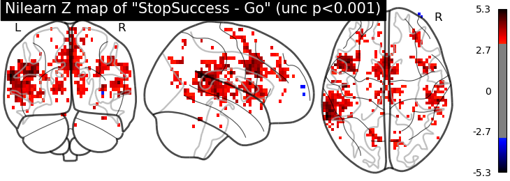
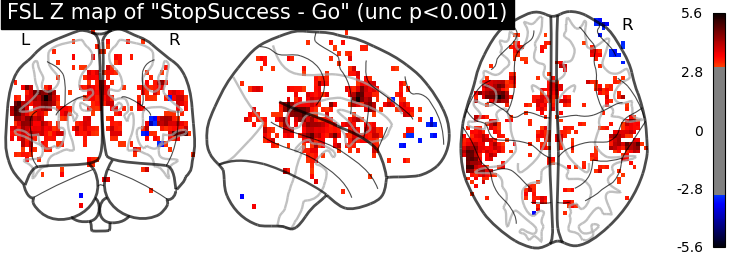
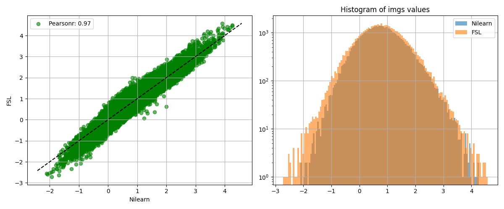
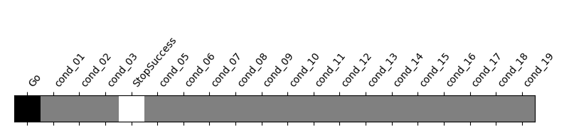
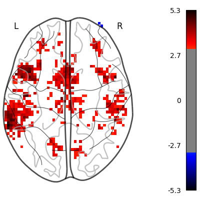
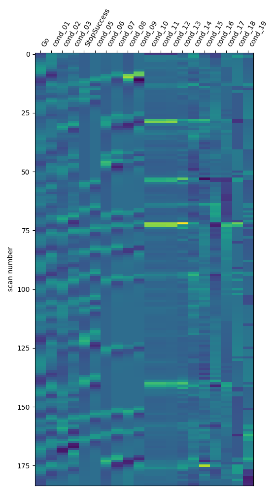
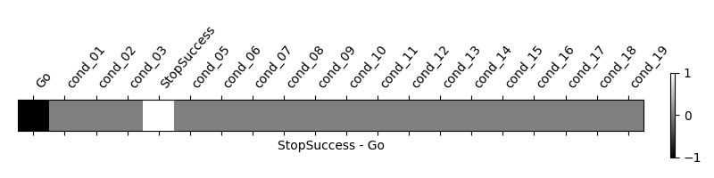

Note
Click here to download the full example code or to run this example in your browser via Binder
First level analysis of a complete BIDS dataset from openneuro#
Full step-by-step example of fitting a GLM to perform a first level analysis in an openneuro BIDS dataset. We demonstrate how BIDS derivatives can be exploited to perform a simple one subject analysis with minimal code. Details about the BIDS standard are available at http://bids.neuroimaging.io/. We also demonstrate how to download individual groups of files from the Openneuro s3 bucket.
More specifically:
Download an fMRI BIDS dataset with derivatives from openneuro.
Extract first level model objects automatically from the BIDS dataset.
Demonstrate Quality assurance of Nistats estimation against available FSL. estimation in the openneuro dataset.
Display contrast plot and uncorrected first level statistics table report.
Fetch openneuro BIDS dataset#
We download one subject from the stopsignal task in the ds000030 V4 BIDS dataset available in openneuro. This dataset contains the necessary information to run a statistical analysis using Nilearn. The dataset also contains statistical results from a previous FSL analysis that we can employ for comparison with the Nilearn estimation.
from nilearn.datasets import (
fetch_ds000030_urls,
fetch_openneuro_dataset,
select_from_index,
)
_, urls = fetch_ds000030_urls()
exclusion_patterns = ['*group*', '*phenotype*', '*mriqc*',
'*parameter_plots*', '*physio_plots*',
'*space-fsaverage*', '*space-T1w*',
'*dwi*', '*beh*', '*task-bart*',
'*task-rest*', '*task-scap*', '*task-task*']
urls = select_from_index(
urls, exclusion_filters=exclusion_patterns, n_subjects=1)
data_dir, _ = fetch_openneuro_dataset(urls=urls)
Dataset created in /home/alexis/nilearn_data/ds000030/ds000030_R1.0.4/uncompressed
Downloading data from https://osf.io/86xj7/download ...
Downloaded 4210688 of 58172802 bytes (7.2%, 12.8s remaining)
Downloaded 10305536 of 58172802 bytes (17.7%, 9.3s remaining)
Downloaded 15646720 of 58172802 bytes (26.9%, 8.2s remaining)
Downloaded 19234816 of 58172802 bytes (33.1%, 8.1s remaining)
Downloaded 21889024 of 58172802 bytes (37.6%, 8.3s remaining)
Downloaded 25395200 of 58172802 bytes (43.7%, 7.8s remaining)
Downloaded 27361280 of 58172802 bytes (47.0%, 7.9s remaining)
Downloaded 27803648 of 58172802 bytes (47.8%, 8.8s remaining)
Downloaded 28950528 of 58172802 bytes (49.8%, 9.2s remaining)
Downloaded 31670272 of 58172802 bytes (54.4%, 8.4s remaining)
Downloaded 35749888 of 58172802 bytes (61.5%, 6.9s remaining)
Downloaded 40402944 of 58172802 bytes (69.5%, 5.3s remaining)
Downloaded 44417024 of 58172802 bytes (76.4%, 4.1s remaining)
Downloaded 47316992 of 58172802 bytes (81.3%, 3.2s remaining)
Downloaded 50921472 of 58172802 bytes (87.5%, 2.1s remaining)
Downloaded 54329344 of 58172802 bytes (93.4%, 1.1s remaining)
Downloaded 58081280 of 58172802 bytes (99.8%, 0.0s remaining) ...done. (19 seconds, 0 min)
Downloading data from https://s3.amazonaws.com/openneuro/ds000030/ds000030_R1.0.4/uncompressed/README ...
...done. (1 seconds, 0 min)
Downloading data from https://s3.amazonaws.com/openneuro/ds000030/ds000030_R1.0.4/uncompressed/dataset_description.json ...
...done. (1 seconds, 0 min)
Downloading data from https://s3.amazonaws.com/openneuro/ds000030/ds000030_R1.0.4/uncompressed/derivatives/fmriprep/index.html ...
...done. (1 seconds, 0 min)
Downloading data from https://s3.amazonaws.com/openneuro/ds000030/ds000030_R1.0.4/uncompressed/derivatives/fmriprep/sub-10159.html ...
Downloaded 933888 of 15055201 bytes (6.2%, 15.3s remaining)
Downloaded 2269184 of 15055201 bytes (15.1%, 11.4s remaining)
Downloaded 4235264 of 15055201 bytes (28.1%, 7.8s remaining)
Downloaded 6324224 of 15055201 bytes (42.0%, 5.6s remaining)
Downloaded 8470528 of 15055201 bytes (56.3%, 3.9s remaining)
Downloaded 11362304 of 15055201 bytes (75.5%, 2.0s remaining)
Downloaded 14163968 of 15055201 bytes (94.1%, 0.5s remaining) ...done. (8 seconds, 0 min)
Downloading data from https://s3.amazonaws.com/openneuro/ds000030/ds000030_R1.0.4/uncompressed/derivatives/fmriprep/sub-10159/anat/sub-10159_T1w_brainmask.nii.gz ...
...done. (1 seconds, 0 min)
Downloading data from https://s3.amazonaws.com/openneuro/ds000030/ds000030_R1.0.4/uncompressed/derivatives/fmriprep/sub-10159/anat/sub-10159_T1w_dtissue.nii.gz ...
...done. (2 seconds, 0 min)
Downloading data from https://s3.amazonaws.com/openneuro/ds000030/ds000030_R1.0.4/uncompressed/derivatives/fmriprep/sub-10159/anat/sub-10159_T1w_inflated.L.surf.gii ...
Downloaded 1425408 of 2593699 bytes (55.0%, 0.8s remaining) ...done. (2 seconds, 0 min)
Downloading data from https://s3.amazonaws.com/openneuro/ds000030/ds000030_R1.0.4/uncompressed/derivatives/fmriprep/sub-10159/anat/sub-10159_T1w_inflated.R.surf.gii ...
Downloaded 1777664 of 2794836 bytes (63.6%, 0.6s remaining) ...done. (2 seconds, 0 min)
Downloading data from https://s3.amazonaws.com/openneuro/ds000030/ds000030_R1.0.4/uncompressed/derivatives/fmriprep/sub-10159/anat/sub-10159_T1w_midthickness.L.surf.gii ...
Downloaded 1695744 of 2586189 bytes (65.6%, 0.5s remaining) ...done. (2 seconds, 0 min)
Downloading data from https://s3.amazonaws.com/openneuro/ds000030/ds000030_R1.0.4/uncompressed/derivatives/fmriprep/sub-10159/anat/sub-10159_T1w_midthickness.R.surf.gii ...
Downloaded 1064960 of 2788694 bytes (38.2%, 1.6s remaining) ...done. (3 seconds, 0 min)
Downloading data from https://s3.amazonaws.com/openneuro/ds000030/ds000030_R1.0.4/uncompressed/derivatives/fmriprep/sub-10159/anat/sub-10159_T1w_pial.L.surf.gii ...
Downloaded 2162688 of 2590285 bytes (83.5%, 0.2s remaining) ...done. (2 seconds, 0 min)
Downloading data from https://s3.amazonaws.com/openneuro/ds000030/ds000030_R1.0.4/uncompressed/derivatives/fmriprep/sub-10159/anat/sub-10159_T1w_pial.R.surf.gii ...
Downloaded 1073152 of 2793106 bytes (38.4%, 1.6s remaining)
Downloaded 1368064 of 2793106 bytes (49.0%, 2.1s remaining)
Downloaded 2482176 of 2793106 bytes (88.9%, 0.4s remaining) ...done. (4 seconds, 0 min)
Downloading data from https://s3.amazonaws.com/openneuro/ds000030/ds000030_R1.0.4/uncompressed/derivatives/fmriprep/sub-10159/anat/sub-10159_T1w_preproc.nii.gz ...
Downloaded 2482176 of 40628750 bytes (6.1%, 15.4s remaining)
Downloaded 8380416 of 40628750 bytes (20.6%, 7.7s remaining)
Downloaded 12820480 of 40628750 bytes (31.6%, 6.6s remaining)
Downloaded 16556032 of 40628750 bytes (40.7%, 5.9s remaining)
Downloaded 22241280 of 40628750 bytes (54.7%, 4.2s remaining)
Downloaded 26009600 of 40628750 bytes (64.0%, 3.4s remaining)
Downloaded 32727040 of 40628750 bytes (80.6%, 1.7s remaining)
Downloaded 38264832 of 40628750 bytes (94.2%, 0.5s remaining) ...done. (9 seconds, 0 min)
Downloading data from https://s3.amazonaws.com/openneuro/ds000030/ds000030_R1.0.4/uncompressed/derivatives/fmriprep/sub-10159/anat/sub-10159_T1w_smoothwm.L.surf.gii ...
...done. (1 seconds, 0 min)
Downloading data from https://s3.amazonaws.com/openneuro/ds000030/ds000030_R1.0.4/uncompressed/derivatives/fmriprep/sub-10159/anat/sub-10159_T1w_smoothwm.R.surf.gii ...
...done. (2 seconds, 0 min)
Downloading data from https://s3.amazonaws.com/openneuro/ds000030/ds000030_R1.0.4/uncompressed/derivatives/fmriprep/sub-10159/anat/sub-10159_T1w_space-MNI152NLin2009cAsym_brainmask.nii.gz ...
...done. (1 seconds, 0 min)
Downloading data from https://s3.amazonaws.com/openneuro/ds000030/ds000030_R1.0.4/uncompressed/derivatives/fmriprep/sub-10159/anat/sub-10159_T1w_space-MNI152NLin2009cAsym_class-CSF_probtissue.nii.gz ...
Downloaded 999424 of 7247027 bytes (13.8%, 6.3s remaining)
Downloaded 2924544 of 7247027 bytes (40.4%, 3.0s remaining)
Downloaded 5783552 of 7247027 bytes (79.8%, 0.8s remaining) ...done. (4 seconds, 0 min)
Downloading data from https://s3.amazonaws.com/openneuro/ds000030/ds000030_R1.0.4/uncompressed/derivatives/fmriprep/sub-10159/anat/sub-10159_T1w_space-MNI152NLin2009cAsym_class-GM_probtissue.nii.gz ...
Downloaded 1449984 of 7392069 bytes (19.6%, 4.5s remaining)
Downloaded 4153344 of 7392069 bytes (56.2%, 1.7s remaining) ...done. (4 seconds, 0 min)
Downloading data from https://s3.amazonaws.com/openneuro/ds000030/ds000030_R1.0.4/uncompressed/derivatives/fmriprep/sub-10159/anat/sub-10159_T1w_space-MNI152NLin2009cAsym_class-WM_probtissue.nii.gz ...
Downloaded 1310720 of 7447835 bytes (17.6%, 4.7s remaining)
Downloaded 3694592 of 7447835 bytes (49.6%, 2.1s remaining)
Downloaded 6725632 of 7447835 bytes (90.3%, 0.3s remaining) ...done. (4 seconds, 0 min)
Downloading data from https://s3.amazonaws.com/openneuro/ds000030/ds000030_R1.0.4/uncompressed/derivatives/fmriprep/sub-10159/anat/sub-10159_T1w_space-MNI152NLin2009cAsym_preproc.nii.gz ...
Downloaded 4038656 of 8309334 bytes (48.6%, 1.1s remaining) ...done. (2 seconds, 0 min)
Downloading data from https://s3.amazonaws.com/openneuro/ds000030/ds000030_R1.0.4/uncompressed/derivatives/fmriprep/sub-10159/anat/sub-10159_T1w_space-MNI152NLin2009cAsym_warp.h5 ...
Downloaded 1130496 of 102374780 bytes (1.1%, 1.5min remaining)
Downloaded 2965504 of 102374780 bytes (2.9%, 1.2min remaining)
Downloaded 4423680 of 102374780 bytes (4.3%, 1.2min remaining)
Downloaded 5816320 of 102374780 bytes (5.7%, 1.2min remaining)
Downloaded 7593984 of 102374780 bytes (7.4%, 1.1min remaining)
Downloaded 10649600 of 102374780 bytes (10.4%, 53.3s remaining)
Downloaded 15237120 of 102374780 bytes (14.9%, 41.1s remaining)
Downloaded 20971520 of 102374780 bytes (20.5%, 31.8s remaining)
Downloaded 26771456 of 102374780 bytes (26.2%, 26.0s remaining)
Downloaded 29917184 of 102374780 bytes (29.2%, 25.1s remaining)
Downloaded 34783232 of 102374780 bytes (34.0%, 22.1s remaining)
Downloaded 38748160 of 102374780 bytes (37.8%, 20.3s remaining)
Downloaded 41926656 of 102374780 bytes (41.0%, 19.3s remaining)
Downloaded 45301760 of 102374780 bytes (44.3%, 18.1s remaining)
Downloaded 49627136 of 102374780 bytes (48.5%, 16.3s remaining)
Downloaded 55918592 of 102374780 bytes (54.6%, 13.6s remaining)
Downloaded 58523648 of 102374780 bytes (57.2%, 13.1s remaining)
Downloaded 64290816 of 102374780 bytes (62.8%, 10.9s remaining)
Downloaded 68747264 of 102374780 bytes (67.2%, 9.5s remaining)
Downloaded 74907648 of 102374780 bytes (73.2%, 7.5s remaining)
Downloaded 79937536 of 102374780 bytes (78.1%, 6.0s remaining)
Downloaded 85606400 of 102374780 bytes (83.6%, 4.4s remaining)
Downloaded 91652096 of 102374780 bytes (89.5%, 2.7s remaining)
Downloaded 100188160 of 102374780 bytes (97.9%, 0.5s remaining) ...done. (25 seconds, 0 min)
Downloading data from https://s3.amazonaws.com/openneuro/ds000030/ds000030_R1.0.4/uncompressed/derivatives/fmriprep/sub-10159/func/sub-10159_task-stopsignal_bold_confounds.tsv ...
...done. (1 seconds, 0 min)
Downloading data from https://s3.amazonaws.com/openneuro/ds000030/ds000030_R1.0.4/uncompressed/derivatives/fmriprep/sub-10159/func/sub-10159_task-stopsignal_bold_space-MNI152NLin2009cAsym_brainmask.nii.gz ...
...done. (1 seconds, 0 min)
Downloading data from https://s3.amazonaws.com/openneuro/ds000030/ds000030_R1.0.4/uncompressed/derivatives/fmriprep/sub-10159/func/sub-10159_task-stopsignal_bold_space-MNI152NLin2009cAsym_preproc.nii.gz ...
Downloaded 4128768 of 120927302 bytes (3.4%, 28.5s remaining)
Downloaded 11501568 of 120927302 bytes (9.5%, 19.1s remaining)
Downloaded 19922944 of 120927302 bytes (16.5%, 15.3s remaining)
Downloaded 27099136 of 120927302 bytes (22.4%, 13.9s remaining)
Downloaded 34242560 of 120927302 bytes (28.3%, 12.7s remaining)
Downloaded 42254336 of 120927302 bytes (34.9%, 11.2s remaining)
Downloaded 50741248 of 120927302 bytes (42.0%, 9.7s remaining)
Downloaded 58556416 of 120927302 bytes (48.4%, 8.6s remaining)
Downloaded 62423040 of 120927302 bytes (51.6%, 8.6s remaining)
Downloaded 66469888 of 120927302 bytes (55.0%, 8.4s remaining)
Downloaded 74711040 of 120927302 bytes (61.8%, 6.9s remaining)
Downloaded 81641472 of 120927302 bytes (67.5%, 5.9s remaining)
Downloaded 89112576 of 120927302 bytes (73.7%, 4.7s remaining)
Downloaded 93765632 of 120927302 bytes (77.5%, 4.1s remaining)
Downloaded 101629952 of 120927302 bytes (84.0%, 2.9s remaining)
Downloaded 109527040 of 120927302 bytes (90.6%, 1.7s remaining)
Downloaded 116244480 of 120927302 bytes (96.1%, 0.7s remaining) ...done. (19 seconds, 0 min)
Downloading data from https://s3.amazonaws.com/openneuro/ds000030/ds000030_R1.0.4/uncompressed/derivatives/task/sub-10159/bart.feat/.files/fsl.css ...
...done. (1 seconds, 0 min)
Downloading data from https://s3.amazonaws.com/openneuro/ds000030/ds000030_R1.0.4/uncompressed/derivatives/task/sub-10159/bart.feat/.files/images/3.1r.jpg ...
...done. (1 seconds, 0 min)
Downloading data from https://s3.amazonaws.com/openneuro/ds000030/ds000030_R1.0.4/uncompressed/derivatives/task/sub-10159/bart.feat/.files/images/3.jpg ...
...done. (1 seconds, 0 min)
Downloading data from https://s3.amazonaws.com/openneuro/ds000030/ds000030_R1.0.4/uncompressed/derivatives/task/sub-10159/bart.feat/.files/images/flirt-bg.jpg ...
...done. (1 seconds, 0 min)
Downloading data from https://s3.amazonaws.com/openneuro/ds000030/ds000030_R1.0.4/uncompressed/derivatives/task/sub-10159/bart.feat/.files/images/fsl-bg ...
...done. (1 seconds, 0 min)
Downloading data from https://s3.amazonaws.com/openneuro/ds000030/ds000030_R1.0.4/uncompressed/derivatives/task/sub-10159/bart.feat/.files/images/fsl-bg.jpg ...
...done. (1 seconds, 0 min)
Downloading data from https://s3.amazonaws.com/openneuro/ds000030/ds000030_R1.0.4/uncompressed/derivatives/task/sub-10159/bart.feat/.files/images/fsl-logo-big.jpg ...
...done. (1 seconds, 0 min)
Downloading data from https://s3.amazonaws.com/openneuro/ds000030/ds000030_R1.0.4/uncompressed/derivatives/task/sub-10159/bart.feat/.files/images/fsl-logo.gif ...
...done. (1 seconds, 0 min)
Downloading data from https://s3.amazonaws.com/openneuro/ds000030/ds000030_R1.0.4/uncompressed/derivatives/task/sub-10159/bart.feat/.files/images/fsl-logo.jpg ...
...done. (0 seconds, 0 min)
Downloading data from https://s3.amazonaws.com/openneuro/ds000030/ds000030_R1.0.4/uncompressed/derivatives/task/sub-10159/bart.feat/.files/images/fsl-logo.png ...
...done. (1 seconds, 0 min)
Downloading data from https://s3.amazonaws.com/openneuro/ds000030/ds000030_R1.0.4/uncompressed/derivatives/task/sub-10159/bart.feat/.files/images/fsl-macos-snapshot.tiff ...
...done. (1 seconds, 0 min)
Downloading data from https://s3.amazonaws.com/openneuro/ds000030/ds000030_R1.0.4/uncompressed/derivatives/task/sub-10159/bart.feat/.files/images/fslstart.jpg ...
...done. (1 seconds, 0 min)
Downloading data from https://s3.amazonaws.com/openneuro/ds000030/ds000030_R1.0.4/uncompressed/derivatives/task/sub-10159/bart.feat/.files/images/fslstart.png ...
...done. (1 seconds, 0 min)
Downloading data from https://s3.amazonaws.com/openneuro/ds000030/ds000030_R1.0.4/uncompressed/derivatives/task/sub-10159/bart.feat/.files/images/fugue-bg.jpg ...
...done. (0 seconds, 0 min)
Downloading data from https://s3.amazonaws.com/openneuro/ds000030/ds000030_R1.0.4/uncompressed/derivatives/task/sub-10159/bart.feat/.files/images/tick.gif ...
...done. (0 seconds, 0 min)
Downloading data from https://s3.amazonaws.com/openneuro/ds000030/ds000030_R1.0.4/uncompressed/derivatives/task/sub-10159/bart.feat/.files/images/vert2.png ...
...done. (1 seconds, 0 min)
Downloading data from https://s3.amazonaws.com/openneuro/ds000030/ds000030_R1.0.4/uncompressed/derivatives/task/sub-10159/bart.feat/.ramp.gif ...
...done. (1 seconds, 0 min)
Downloading data from https://s3.amazonaws.com/openneuro/ds000030/ds000030_R1.0.4/uncompressed/derivatives/task/sub-10159/bart.feat/absbrainthresh.txt ...
...done. (0 seconds, 0 min)
Downloading data from https://s3.amazonaws.com/openneuro/ds000030/ds000030_R1.0.4/uncompressed/derivatives/task/sub-10159/bart.feat/custom_timing_files/ev1.txt ...
...done. (0 seconds, 0 min)
Downloading data from https://s3.amazonaws.com/openneuro/ds000030/ds000030_R1.0.4/uncompressed/derivatives/task/sub-10159/bart.feat/custom_timing_files/ev10.txt ...
...done. (0 seconds, 0 min)
Downloading data from https://s3.amazonaws.com/openneuro/ds000030/ds000030_R1.0.4/uncompressed/derivatives/task/sub-10159/bart.feat/custom_timing_files/ev11.txt ...
...done. (1 seconds, 0 min)
Downloading data from https://s3.amazonaws.com/openneuro/ds000030/ds000030_R1.0.4/uncompressed/derivatives/task/sub-10159/bart.feat/custom_timing_files/ev12.txt ...
...done. (1 seconds, 0 min)
Downloading data from https://s3.amazonaws.com/openneuro/ds000030/ds000030_R1.0.4/uncompressed/derivatives/task/sub-10159/bart.feat/custom_timing_files/ev13.txt ...
...done. (0 seconds, 0 min)
Downloading data from https://s3.amazonaws.com/openneuro/ds000030/ds000030_R1.0.4/uncompressed/derivatives/task/sub-10159/bart.feat/custom_timing_files/ev14.txt ...
...done. (1 seconds, 0 min)
Downloading data from https://s3.amazonaws.com/openneuro/ds000030/ds000030_R1.0.4/uncompressed/derivatives/task/sub-10159/bart.feat/custom_timing_files/ev15.txt ...
...done. (0 seconds, 0 min)
Downloading data from https://s3.amazonaws.com/openneuro/ds000030/ds000030_R1.0.4/uncompressed/derivatives/task/sub-10159/bart.feat/custom_timing_files/ev16.txt ...
...done. (1 seconds, 0 min)
Downloading data from https://s3.amazonaws.com/openneuro/ds000030/ds000030_R1.0.4/uncompressed/derivatives/task/sub-10159/bart.feat/custom_timing_files/ev17.txt ...
...done. (1 seconds, 0 min)
Downloading data from https://s3.amazonaws.com/openneuro/ds000030/ds000030_R1.0.4/uncompressed/derivatives/task/sub-10159/bart.feat/custom_timing_files/ev18.txt ...
...done. (0 seconds, 0 min)
Downloading data from https://s3.amazonaws.com/openneuro/ds000030/ds000030_R1.0.4/uncompressed/derivatives/task/sub-10159/bart.feat/custom_timing_files/ev19.txt ...
...done. (0 seconds, 0 min)
Downloading data from https://s3.amazonaws.com/openneuro/ds000030/ds000030_R1.0.4/uncompressed/derivatives/task/sub-10159/bart.feat/custom_timing_files/ev2.txt ...
...done. (1 seconds, 0 min)
Downloading data from https://s3.amazonaws.com/openneuro/ds000030/ds000030_R1.0.4/uncompressed/derivatives/task/sub-10159/bart.feat/custom_timing_files/ev3.txt ...
...done. (1 seconds, 0 min)
Downloading data from https://s3.amazonaws.com/openneuro/ds000030/ds000030_R1.0.4/uncompressed/derivatives/task/sub-10159/bart.feat/custom_timing_files/ev4.txt ...
...done. (1 seconds, 0 min)
Downloading data from https://s3.amazonaws.com/openneuro/ds000030/ds000030_R1.0.4/uncompressed/derivatives/task/sub-10159/bart.feat/custom_timing_files/ev5.txt ...
...done. (1 seconds, 0 min)
Downloading data from https://s3.amazonaws.com/openneuro/ds000030/ds000030_R1.0.4/uncompressed/derivatives/task/sub-10159/bart.feat/custom_timing_files/ev6.txt ...
...done. (0 seconds, 0 min)
Downloading data from https://s3.amazonaws.com/openneuro/ds000030/ds000030_R1.0.4/uncompressed/derivatives/task/sub-10159/bart.feat/custom_timing_files/ev7.txt ...
...done. (0 seconds, 0 min)
Downloading data from https://s3.amazonaws.com/openneuro/ds000030/ds000030_R1.0.4/uncompressed/derivatives/task/sub-10159/bart.feat/custom_timing_files/ev8.txt ...
...done. (1 seconds, 0 min)
Downloading data from https://s3.amazonaws.com/openneuro/ds000030/ds000030_R1.0.4/uncompressed/derivatives/task/sub-10159/bart.feat/custom_timing_files/ev9.txt ...
...done. (0 seconds, 0 min)
Downloading data from https://s3.amazonaws.com/openneuro/ds000030/ds000030_R1.0.4/uncompressed/derivatives/task/sub-10159/bart.feat/design.con ...
...done. (0 seconds, 0 min)
Downloading data from https://s3.amazonaws.com/openneuro/ds000030/ds000030_R1.0.4/uncompressed/derivatives/task/sub-10159/bart.feat/design.frf ...
...done. (0 seconds, 0 min)
Downloading data from https://s3.amazonaws.com/openneuro/ds000030/ds000030_R1.0.4/uncompressed/derivatives/task/sub-10159/bart.feat/design.fsf ...
...done. (1 seconds, 0 min)
Downloading data from https://s3.amazonaws.com/openneuro/ds000030/ds000030_R1.0.4/uncompressed/derivatives/task/sub-10159/bart.feat/design.mat ...
...done. (1 seconds, 0 min)
Downloading data from https://s3.amazonaws.com/openneuro/ds000030/ds000030_R1.0.4/uncompressed/derivatives/task/sub-10159/bart.feat/design.min ...
...done. (0 seconds, 0 min)
Downloading data from https://s3.amazonaws.com/openneuro/ds000030/ds000030_R1.0.4/uncompressed/derivatives/task/sub-10159/bart.feat/design.png ...
...done. (1 seconds, 0 min)
Downloading data from https://s3.amazonaws.com/openneuro/ds000030/ds000030_R1.0.4/uncompressed/derivatives/task/sub-10159/bart.feat/design.ppm ...
...done. (1 seconds, 0 min)
Downloading data from https://s3.amazonaws.com/openneuro/ds000030/ds000030_R1.0.4/uncompressed/derivatives/task/sub-10159/bart.feat/design.trg ...
...done. (1 seconds, 0 min)
Downloading data from https://s3.amazonaws.com/openneuro/ds000030/ds000030_R1.0.4/uncompressed/derivatives/task/sub-10159/bart.feat/design_cov.png ...
...done. (0 seconds, 0 min)
Downloading data from https://s3.amazonaws.com/openneuro/ds000030/ds000030_R1.0.4/uncompressed/derivatives/task/sub-10159/bart.feat/design_cov.ppm ...
...done. (1 seconds, 0 min)
Downloading data from https://s3.amazonaws.com/openneuro/ds000030/ds000030_R1.0.4/uncompressed/derivatives/task/sub-10159/bart.feat/example_func.nii.gz ...
...done. (1 seconds, 0 min)
Downloading data from https://s3.amazonaws.com/openneuro/ds000030/ds000030_R1.0.4/uncompressed/derivatives/task/sub-10159/bart.feat/filtered_func_data.nii.gz ...
Downloaded 4251648 of 55009731 bytes (7.7%, 12.0s remaining)
Downloaded 10870784 of 55009731 bytes (19.8%, 8.2s remaining)
Downloaded 19668992 of 55009731 bytes (35.8%, 5.4s remaining)
Downloaded 27516928 of 55009731 bytes (50.0%, 4.0s remaining)
Downloaded 33792000 of 55009731 bytes (61.4%, 3.2s remaining)
Downloaded 42885120 of 55009731 bytes (78.0%, 1.7s remaining)
Downloaded 52813824 of 55009731 bytes (96.0%, 0.3s remaining) ...done. (8 seconds, 0 min)
Downloading data from https://s3.amazonaws.com/openneuro/ds000030/ds000030_R1.0.4/uncompressed/derivatives/task/sub-10159/bart.feat/logs/feat0 ...
...done. (1 seconds, 0 min)
Downloading data from https://s3.amazonaws.com/openneuro/ds000030/ds000030_R1.0.4/uncompressed/derivatives/task/sub-10159/bart.feat/logs/feat0_init.e60127 ...
...done. (0 seconds, 0 min)
Downloading data from https://s3.amazonaws.com/openneuro/ds000030/ds000030_R1.0.4/uncompressed/derivatives/task/sub-10159/bart.feat/logs/feat0_init.o60127 ...
...done. (1 seconds, 0 min)
Downloading data from https://s3.amazonaws.com/openneuro/ds000030/ds000030_R1.0.4/uncompressed/derivatives/task/sub-10159/bart.feat/logs/feat1 ...
...done. (0 seconds, 0 min)
Downloading data from https://s3.amazonaws.com/openneuro/ds000030/ds000030_R1.0.4/uncompressed/derivatives/task/sub-10159/bart.feat/logs/feat1a_init ...
...done. (0 seconds, 0 min)
Downloading data from https://s3.amazonaws.com/openneuro/ds000030/ds000030_R1.0.4/uncompressed/derivatives/task/sub-10159/bart.feat/logs/feat2_pre ...
...done. (0 seconds, 0 min)
Downloading data from https://s3.amazonaws.com/openneuro/ds000030/ds000030_R1.0.4/uncompressed/derivatives/task/sub-10159/bart.feat/logs/feat2_pre.e60564 ...
...done. (0 seconds, 0 min)
Downloading data from https://s3.amazonaws.com/openneuro/ds000030/ds000030_R1.0.4/uncompressed/derivatives/task/sub-10159/bart.feat/logs/feat2_pre.o60564 ...
...done. (1 seconds, 0 min)
Downloading data from https://s3.amazonaws.com/openneuro/ds000030/ds000030_R1.0.4/uncompressed/derivatives/task/sub-10159/bart.feat/logs/feat3_film.e61431 ...
...done. (0 seconds, 0 min)
Downloading data from https://s3.amazonaws.com/openneuro/ds000030/ds000030_R1.0.4/uncompressed/derivatives/task/sub-10159/bart.feat/logs/feat3_film.o61431 ...
...done. (0 seconds, 0 min)
Downloading data from https://s3.amazonaws.com/openneuro/ds000030/ds000030_R1.0.4/uncompressed/derivatives/task/sub-10159/bart.feat/logs/feat3_stats ...
...done. (1 seconds, 0 min)
Downloading data from https://s3.amazonaws.com/openneuro/ds000030/ds000030_R1.0.4/uncompressed/derivatives/task/sub-10159/bart.feat/logs/feat4_post ...
...done. (1 seconds, 0 min)
Downloading data from https://s3.amazonaws.com/openneuro/ds000030/ds000030_R1.0.4/uncompressed/derivatives/task/sub-10159/bart.feat/logs/feat4_post.e120148 ...
...done. (0 seconds, 0 min)
Downloading data from https://s3.amazonaws.com/openneuro/ds000030/ds000030_R1.0.4/uncompressed/derivatives/task/sub-10159/bart.feat/logs/feat4_post.o120148 ...
...done. (0 seconds, 0 min)
Downloading data from https://s3.amazonaws.com/openneuro/ds000030/ds000030_R1.0.4/uncompressed/derivatives/task/sub-10159/bart.feat/logs/feat5_stop.e134343 ...
...done. (0 seconds, 0 min)
Downloading data from https://s3.amazonaws.com/openneuro/ds000030/ds000030_R1.0.4/uncompressed/derivatives/task/sub-10159/bart.feat/logs/feat5_stop.o134343 ...
...done. (0 seconds, 0 min)
Downloading data from https://s3.amazonaws.com/openneuro/ds000030/ds000030_R1.0.4/uncompressed/derivatives/task/sub-10159/bart.feat/logs/feat9 ...
...done. (1 seconds, 0 min)
Downloading data from https://s3.amazonaws.com/openneuro/ds000030/ds000030_R1.0.4/uncompressed/derivatives/task/sub-10159/bart.feat/mask.nii.gz ...
...done. (1 seconds, 0 min)
Downloading data from https://s3.amazonaws.com/openneuro/ds000030/ds000030_R1.0.4/uncompressed/derivatives/task/sub-10159/bart.feat/mean_func.nii.gz ...
...done. (1 seconds, 0 min)
Downloading data from https://s3.amazonaws.com/openneuro/ds000030/ds000030_R1.0.4/uncompressed/derivatives/task/sub-10159/bart.feat/report.html ...
...done. (1 seconds, 0 min)
Downloading data from https://s3.amazonaws.com/openneuro/ds000030/ds000030_R1.0.4/uncompressed/derivatives/task/sub-10159/bart.feat/report_log.html ...
...done. (1 seconds, 0 min)
Downloading data from https://s3.amazonaws.com/openneuro/ds000030/ds000030_R1.0.4/uncompressed/derivatives/task/sub-10159/bart.feat/report_poststats.html ...
...done. (0 seconds, 0 min)
Downloading data from https://s3.amazonaws.com/openneuro/ds000030/ds000030_R1.0.4/uncompressed/derivatives/task/sub-10159/bart.feat/report_prestats.html ...
...done. (1 seconds, 0 min)
Downloading data from https://s3.amazonaws.com/openneuro/ds000030/ds000030_R1.0.4/uncompressed/derivatives/task/sub-10159/bart.feat/report_reg.html ...
...done. (1 seconds, 0 min)
Downloading data from https://s3.amazonaws.com/openneuro/ds000030/ds000030_R1.0.4/uncompressed/derivatives/task/sub-10159/bart.feat/report_stats.html ...
...done. (1 seconds, 0 min)
Downloading data from https://s3.amazonaws.com/openneuro/ds000030/ds000030_R1.0.4/uncompressed/derivatives/task/sub-10159/bart.feat/stats/cope1.nii.gz ...
...done. (1 seconds, 0 min)
Downloading data from https://s3.amazonaws.com/openneuro/ds000030/ds000030_R1.0.4/uncompressed/derivatives/task/sub-10159/bart.feat/stats/cope10.nii.gz ...
...done. (1 seconds, 0 min)
Downloading data from https://s3.amazonaws.com/openneuro/ds000030/ds000030_R1.0.4/uncompressed/derivatives/task/sub-10159/bart.feat/stats/cope11.nii.gz ...
...done. (1 seconds, 0 min)
Downloading data from https://s3.amazonaws.com/openneuro/ds000030/ds000030_R1.0.4/uncompressed/derivatives/task/sub-10159/bart.feat/stats/cope12.nii.gz ...
...done. (1 seconds, 0 min)
Downloading data from https://s3.amazonaws.com/openneuro/ds000030/ds000030_R1.0.4/uncompressed/derivatives/task/sub-10159/bart.feat/stats/cope13.nii.gz ...
...done. (1 seconds, 0 min)
Downloading data from https://s3.amazonaws.com/openneuro/ds000030/ds000030_R1.0.4/uncompressed/derivatives/task/sub-10159/bart.feat/stats/cope14.nii.gz ...
...done. (1 seconds, 0 min)
Downloading data from https://s3.amazonaws.com/openneuro/ds000030/ds000030_R1.0.4/uncompressed/derivatives/task/sub-10159/bart.feat/stats/cope15.nii.gz ...
...done. (1 seconds, 0 min)
Downloading data from https://s3.amazonaws.com/openneuro/ds000030/ds000030_R1.0.4/uncompressed/derivatives/task/sub-10159/bart.feat/stats/cope16.nii.gz ...
...done. (1 seconds, 0 min)
Downloading data from https://s3.amazonaws.com/openneuro/ds000030/ds000030_R1.0.4/uncompressed/derivatives/task/sub-10159/bart.feat/stats/cope17.nii.gz ...
...done. (1 seconds, 0 min)
Downloading data from https://s3.amazonaws.com/openneuro/ds000030/ds000030_R1.0.4/uncompressed/derivatives/task/sub-10159/bart.feat/stats/cope18.nii.gz ...
...done. (1 seconds, 0 min)
Downloading data from https://s3.amazonaws.com/openneuro/ds000030/ds000030_R1.0.4/uncompressed/derivatives/task/sub-10159/bart.feat/stats/cope19.nii.gz ...
...done. (1 seconds, 0 min)
Downloading data from https://s3.amazonaws.com/openneuro/ds000030/ds000030_R1.0.4/uncompressed/derivatives/task/sub-10159/bart.feat/stats/cope2.nii.gz ...
...done. (1 seconds, 0 min)
Downloading data from https://s3.amazonaws.com/openneuro/ds000030/ds000030_R1.0.4/uncompressed/derivatives/task/sub-10159/bart.feat/stats/cope20.nii.gz ...
...done. (1 seconds, 0 min)
Downloading data from https://s3.amazonaws.com/openneuro/ds000030/ds000030_R1.0.4/uncompressed/derivatives/task/sub-10159/bart.feat/stats/cope21.nii.gz ...
...done. (1 seconds, 0 min)
Downloading data from https://s3.amazonaws.com/openneuro/ds000030/ds000030_R1.0.4/uncompressed/derivatives/task/sub-10159/bart.feat/stats/cope22.nii.gz ...
...done. (1 seconds, 0 min)
Downloading data from https://s3.amazonaws.com/openneuro/ds000030/ds000030_R1.0.4/uncompressed/derivatives/task/sub-10159/bart.feat/stats/cope23.nii.gz ...
...done. (1 seconds, 0 min)
Downloading data from https://s3.amazonaws.com/openneuro/ds000030/ds000030_R1.0.4/uncompressed/derivatives/task/sub-10159/bart.feat/stats/cope24.nii.gz ...
...done. (1 seconds, 0 min)
Downloading data from https://s3.amazonaws.com/openneuro/ds000030/ds000030_R1.0.4/uncompressed/derivatives/task/sub-10159/bart.feat/stats/cope3.nii.gz ...
...done. (1 seconds, 0 min)
Downloading data from https://s3.amazonaws.com/openneuro/ds000030/ds000030_R1.0.4/uncompressed/derivatives/task/sub-10159/bart.feat/stats/cope4.nii.gz ...
...done. (1 seconds, 0 min)
Downloading data from https://s3.amazonaws.com/openneuro/ds000030/ds000030_R1.0.4/uncompressed/derivatives/task/sub-10159/bart.feat/stats/cope5.nii.gz ...
...done. (1 seconds, 0 min)
Downloading data from https://s3.amazonaws.com/openneuro/ds000030/ds000030_R1.0.4/uncompressed/derivatives/task/sub-10159/bart.feat/stats/cope6.nii.gz ...
...done. (1 seconds, 0 min)
Downloading data from https://s3.amazonaws.com/openneuro/ds000030/ds000030_R1.0.4/uncompressed/derivatives/task/sub-10159/bart.feat/stats/cope7.nii.gz ...
...done. (1 seconds, 0 min)
Downloading data from https://s3.amazonaws.com/openneuro/ds000030/ds000030_R1.0.4/uncompressed/derivatives/task/sub-10159/bart.feat/stats/cope8.nii.gz ...
...done. (1 seconds, 0 min)
Downloading data from https://s3.amazonaws.com/openneuro/ds000030/ds000030_R1.0.4/uncompressed/derivatives/task/sub-10159/bart.feat/stats/cope9.nii.gz ...
...done. (1 seconds, 0 min)
Downloading data from https://s3.amazonaws.com/openneuro/ds000030/ds000030_R1.0.4/uncompressed/derivatives/task/sub-10159/bart.feat/stats/dof ...
...done. (0 seconds, 0 min)
Downloading data from https://s3.amazonaws.com/openneuro/ds000030/ds000030_R1.0.4/uncompressed/derivatives/task/sub-10159/bart.feat/stats/logfile ...
...done. (0 seconds, 0 min)
Downloading data from https://s3.amazonaws.com/openneuro/ds000030/ds000030_R1.0.4/uncompressed/derivatives/task/sub-10159/bart.feat/stats/pe1.nii.gz ...
...done. (1 seconds, 0 min)
Downloading data from https://s3.amazonaws.com/openneuro/ds000030/ds000030_R1.0.4/uncompressed/derivatives/task/sub-10159/bart.feat/stats/pe10.nii.gz ...
...done. (1 seconds, 0 min)
Downloading data from https://s3.amazonaws.com/openneuro/ds000030/ds000030_R1.0.4/uncompressed/derivatives/task/sub-10159/bart.feat/stats/pe11.nii.gz ...
...done. (1 seconds, 0 min)
Downloading data from https://s3.amazonaws.com/openneuro/ds000030/ds000030_R1.0.4/uncompressed/derivatives/task/sub-10159/bart.feat/stats/pe12.nii.gz ...
...done. (1 seconds, 0 min)
Downloading data from https://s3.amazonaws.com/openneuro/ds000030/ds000030_R1.0.4/uncompressed/derivatives/task/sub-10159/bart.feat/stats/pe13.nii.gz ...
...done. (1 seconds, 0 min)
Downloading data from https://s3.amazonaws.com/openneuro/ds000030/ds000030_R1.0.4/uncompressed/derivatives/task/sub-10159/bart.feat/stats/pe14.nii.gz ...
...done. (1 seconds, 0 min)
Downloading data from https://s3.amazonaws.com/openneuro/ds000030/ds000030_R1.0.4/uncompressed/derivatives/task/sub-10159/bart.feat/stats/pe15.nii.gz ...
...done. (1 seconds, 0 min)
Downloading data from https://s3.amazonaws.com/openneuro/ds000030/ds000030_R1.0.4/uncompressed/derivatives/task/sub-10159/bart.feat/stats/pe16.nii.gz ...
...done. (1 seconds, 0 min)
Downloading data from https://s3.amazonaws.com/openneuro/ds000030/ds000030_R1.0.4/uncompressed/derivatives/task/sub-10159/bart.feat/stats/pe17.nii.gz ...
...done. (1 seconds, 0 min)
Downloading data from https://s3.amazonaws.com/openneuro/ds000030/ds000030_R1.0.4/uncompressed/derivatives/task/sub-10159/bart.feat/stats/pe18.nii.gz ...
...done. (1 seconds, 0 min)
Downloading data from https://s3.amazonaws.com/openneuro/ds000030/ds000030_R1.0.4/uncompressed/derivatives/task/sub-10159/bart.feat/stats/pe19.nii.gz ...
...done. (1 seconds, 0 min)
Downloading data from https://s3.amazonaws.com/openneuro/ds000030/ds000030_R1.0.4/uncompressed/derivatives/task/sub-10159/bart.feat/stats/pe2.nii.gz ...
...done. (1 seconds, 0 min)
Downloading data from https://s3.amazonaws.com/openneuro/ds000030/ds000030_R1.0.4/uncompressed/derivatives/task/sub-10159/bart.feat/stats/pe20.nii.gz ...
...done. (1 seconds, 0 min)
Downloading data from https://s3.amazonaws.com/openneuro/ds000030/ds000030_R1.0.4/uncompressed/derivatives/task/sub-10159/bart.feat/stats/pe21.nii.gz ...
...done. (1 seconds, 0 min)
Downloading data from https://s3.amazonaws.com/openneuro/ds000030/ds000030_R1.0.4/uncompressed/derivatives/task/sub-10159/bart.feat/stats/pe22.nii.gz ...
...done. (1 seconds, 0 min)
Downloading data from https://s3.amazonaws.com/openneuro/ds000030/ds000030_R1.0.4/uncompressed/derivatives/task/sub-10159/bart.feat/stats/pe23.nii.gz ...
...done. (1 seconds, 0 min)
Downloading data from https://s3.amazonaws.com/openneuro/ds000030/ds000030_R1.0.4/uncompressed/derivatives/task/sub-10159/bart.feat/stats/pe24.nii.gz ...
...done. (1 seconds, 0 min)
Downloading data from https://s3.amazonaws.com/openneuro/ds000030/ds000030_R1.0.4/uncompressed/derivatives/task/sub-10159/bart.feat/stats/pe25.nii.gz ...
...done. (1 seconds, 0 min)
Downloading data from https://s3.amazonaws.com/openneuro/ds000030/ds000030_R1.0.4/uncompressed/derivatives/task/sub-10159/bart.feat/stats/pe26.nii.gz ...
...done. (1 seconds, 0 min)
Downloading data from https://s3.amazonaws.com/openneuro/ds000030/ds000030_R1.0.4/uncompressed/derivatives/task/sub-10159/bart.feat/stats/pe27.nii.gz ...
...done. (1 seconds, 0 min)
Downloading data from https://s3.amazonaws.com/openneuro/ds000030/ds000030_R1.0.4/uncompressed/derivatives/task/sub-10159/bart.feat/stats/pe28.nii.gz ...
...done. (1 seconds, 0 min)
Downloading data from https://s3.amazonaws.com/openneuro/ds000030/ds000030_R1.0.4/uncompressed/derivatives/task/sub-10159/bart.feat/stats/pe3.nii.gz ...
...done. (1 seconds, 0 min)
Downloading data from https://s3.amazonaws.com/openneuro/ds000030/ds000030_R1.0.4/uncompressed/derivatives/task/sub-10159/bart.feat/stats/pe4.nii.gz ...
...done. (1 seconds, 0 min)
Downloading data from https://s3.amazonaws.com/openneuro/ds000030/ds000030_R1.0.4/uncompressed/derivatives/task/sub-10159/bart.feat/stats/pe5.nii.gz ...
...done. (1 seconds, 0 min)
Downloading data from https://s3.amazonaws.com/openneuro/ds000030/ds000030_R1.0.4/uncompressed/derivatives/task/sub-10159/bart.feat/stats/pe6.nii.gz ...
...done. (1 seconds, 0 min)
Downloading data from https://s3.amazonaws.com/openneuro/ds000030/ds000030_R1.0.4/uncompressed/derivatives/task/sub-10159/bart.feat/stats/pe7.nii.gz ...
...done. (1 seconds, 0 min)
Downloading data from https://s3.amazonaws.com/openneuro/ds000030/ds000030_R1.0.4/uncompressed/derivatives/task/sub-10159/bart.feat/stats/pe8.nii.gz ...
...done. (1 seconds, 0 min)
Downloading data from https://s3.amazonaws.com/openneuro/ds000030/ds000030_R1.0.4/uncompressed/derivatives/task/sub-10159/bart.feat/stats/pe9.nii.gz ...
...done. (1 seconds, 0 min)
Downloading data from https://s3.amazonaws.com/openneuro/ds000030/ds000030_R1.0.4/uncompressed/derivatives/task/sub-10159/bart.feat/stats/res4d.nii.gz ...
Downloaded 3776512 of 59250229 bytes (6.4%, 14.7s remaining)
Downloaded 11280384 of 59250229 bytes (19.0%, 8.5s remaining)
Downloaded 19636224 of 59250229 bytes (33.1%, 6.1s remaining)
Downloaded 27156480 of 59250229 bytes (45.8%, 4.7s remaining)
Downloaded 36249600 of 59250229 bytes (61.2%, 3.2s remaining)
Downloaded 45752320 of 59250229 bytes (77.2%, 1.8s remaining)
Downloaded 55828480 of 59250229 bytes (94.2%, 0.4s remaining) ...done. (8 seconds, 0 min)
Downloading data from https://s3.amazonaws.com/openneuro/ds000030/ds000030_R1.0.4/uncompressed/derivatives/task/sub-10159/bart.feat/stats/sigmasquareds.nii.gz ...
...done. (1 seconds, 0 min)
Downloading data from https://s3.amazonaws.com/openneuro/ds000030/ds000030_R1.0.4/uncompressed/derivatives/task/sub-10159/bart.feat/stats/smoothness ...
...done. (0 seconds, 0 min)
Downloading data from https://s3.amazonaws.com/openneuro/ds000030/ds000030_R1.0.4/uncompressed/derivatives/task/sub-10159/bart.feat/stats/threshac1.nii.gz ...
...done. (1 seconds, 0 min)
Downloading data from https://s3.amazonaws.com/openneuro/ds000030/ds000030_R1.0.4/uncompressed/derivatives/task/sub-10159/bart.feat/stats/tstat1.nii.gz ...
...done. (1 seconds, 0 min)
Downloading data from https://s3.amazonaws.com/openneuro/ds000030/ds000030_R1.0.4/uncompressed/derivatives/task/sub-10159/bart.feat/stats/tstat10.nii.gz ...
...done. (1 seconds, 0 min)
Downloading data from https://s3.amazonaws.com/openneuro/ds000030/ds000030_R1.0.4/uncompressed/derivatives/task/sub-10159/bart.feat/stats/tstat11.nii.gz ...
...done. (1 seconds, 0 min)
Downloading data from https://s3.amazonaws.com/openneuro/ds000030/ds000030_R1.0.4/uncompressed/derivatives/task/sub-10159/bart.feat/stats/tstat12.nii.gz ...
...done. (1 seconds, 0 min)
Downloading data from https://s3.amazonaws.com/openneuro/ds000030/ds000030_R1.0.4/uncompressed/derivatives/task/sub-10159/bart.feat/stats/tstat13.nii.gz ...
...done. (1 seconds, 0 min)
Downloading data from https://s3.amazonaws.com/openneuro/ds000030/ds000030_R1.0.4/uncompressed/derivatives/task/sub-10159/bart.feat/stats/tstat14.nii.gz ...
...done. (1 seconds, 0 min)
Downloading data from https://s3.amazonaws.com/openneuro/ds000030/ds000030_R1.0.4/uncompressed/derivatives/task/sub-10159/bart.feat/stats/tstat15.nii.gz ...
...done. (1 seconds, 0 min)
Downloading data from https://s3.amazonaws.com/openneuro/ds000030/ds000030_R1.0.4/uncompressed/derivatives/task/sub-10159/bart.feat/stats/tstat16.nii.gz ...
...done. (1 seconds, 0 min)
Downloading data from https://s3.amazonaws.com/openneuro/ds000030/ds000030_R1.0.4/uncompressed/derivatives/task/sub-10159/bart.feat/stats/tstat17.nii.gz ...
...done. (1 seconds, 0 min)
Downloading data from https://s3.amazonaws.com/openneuro/ds000030/ds000030_R1.0.4/uncompressed/derivatives/task/sub-10159/bart.feat/stats/tstat18.nii.gz ...
...done. (1 seconds, 0 min)
Downloading data from https://s3.amazonaws.com/openneuro/ds000030/ds000030_R1.0.4/uncompressed/derivatives/task/sub-10159/bart.feat/stats/tstat19.nii.gz ...
...done. (1 seconds, 0 min)
Downloading data from https://s3.amazonaws.com/openneuro/ds000030/ds000030_R1.0.4/uncompressed/derivatives/task/sub-10159/bart.feat/stats/tstat2.nii.gz ...
...done. (1 seconds, 0 min)
Downloading data from https://s3.amazonaws.com/openneuro/ds000030/ds000030_R1.0.4/uncompressed/derivatives/task/sub-10159/bart.feat/stats/tstat20.nii.gz ...
...done. (1 seconds, 0 min)
Downloading data from https://s3.amazonaws.com/openneuro/ds000030/ds000030_R1.0.4/uncompressed/derivatives/task/sub-10159/bart.feat/stats/tstat21.nii.gz ...
...done. (1 seconds, 0 min)
Downloading data from https://s3.amazonaws.com/openneuro/ds000030/ds000030_R1.0.4/uncompressed/derivatives/task/sub-10159/bart.feat/stats/tstat22.nii.gz ...
...done. (1 seconds, 0 min)
Downloading data from https://s3.amazonaws.com/openneuro/ds000030/ds000030_R1.0.4/uncompressed/derivatives/task/sub-10159/bart.feat/stats/tstat23.nii.gz ...
...done. (1 seconds, 0 min)
Downloading data from https://s3.amazonaws.com/openneuro/ds000030/ds000030_R1.0.4/uncompressed/derivatives/task/sub-10159/bart.feat/stats/tstat24.nii.gz ...
...done. (1 seconds, 0 min)
Downloading data from https://s3.amazonaws.com/openneuro/ds000030/ds000030_R1.0.4/uncompressed/derivatives/task/sub-10159/bart.feat/stats/tstat3.nii.gz ...
...done. (1 seconds, 0 min)
Downloading data from https://s3.amazonaws.com/openneuro/ds000030/ds000030_R1.0.4/uncompressed/derivatives/task/sub-10159/bart.feat/stats/tstat4.nii.gz ...
...done. (1 seconds, 0 min)
Downloading data from https://s3.amazonaws.com/openneuro/ds000030/ds000030_R1.0.4/uncompressed/derivatives/task/sub-10159/bart.feat/stats/tstat5.nii.gz ...
...done. (1 seconds, 0 min)
Downloading data from https://s3.amazonaws.com/openneuro/ds000030/ds000030_R1.0.4/uncompressed/derivatives/task/sub-10159/bart.feat/stats/tstat6.nii.gz ...
...done. (1 seconds, 0 min)
Downloading data from https://s3.amazonaws.com/openneuro/ds000030/ds000030_R1.0.4/uncompressed/derivatives/task/sub-10159/bart.feat/stats/tstat7.nii.gz ...
...done. (1 seconds, 0 min)
Downloading data from https://s3.amazonaws.com/openneuro/ds000030/ds000030_R1.0.4/uncompressed/derivatives/task/sub-10159/bart.feat/stats/tstat8.nii.gz ...
...done. (1 seconds, 0 min)
Downloading data from https://s3.amazonaws.com/openneuro/ds000030/ds000030_R1.0.4/uncompressed/derivatives/task/sub-10159/bart.feat/stats/tstat9.nii.gz ...
...done. (1 seconds, 0 min)
Downloading data from https://s3.amazonaws.com/openneuro/ds000030/ds000030_R1.0.4/uncompressed/derivatives/task/sub-10159/bart.feat/stats/varcope1.nii.gz ...
...done. (1 seconds, 0 min)
Downloading data from https://s3.amazonaws.com/openneuro/ds000030/ds000030_R1.0.4/uncompressed/derivatives/task/sub-10159/bart.feat/stats/varcope10.nii.gz ...
...done. (1 seconds, 0 min)
Downloading data from https://s3.amazonaws.com/openneuro/ds000030/ds000030_R1.0.4/uncompressed/derivatives/task/sub-10159/bart.feat/stats/varcope11.nii.gz ...
...done. (1 seconds, 0 min)
Downloading data from https://s3.amazonaws.com/openneuro/ds000030/ds000030_R1.0.4/uncompressed/derivatives/task/sub-10159/bart.feat/stats/varcope12.nii.gz ...
...done. (1 seconds, 0 min)
Downloading data from https://s3.amazonaws.com/openneuro/ds000030/ds000030_R1.0.4/uncompressed/derivatives/task/sub-10159/bart.feat/stats/varcope13.nii.gz ...
...done. (1 seconds, 0 min)
Downloading data from https://s3.amazonaws.com/openneuro/ds000030/ds000030_R1.0.4/uncompressed/derivatives/task/sub-10159/bart.feat/stats/varcope14.nii.gz ...
...done. (1 seconds, 0 min)
Downloading data from https://s3.amazonaws.com/openneuro/ds000030/ds000030_R1.0.4/uncompressed/derivatives/task/sub-10159/bart.feat/stats/varcope15.nii.gz ...
...done. (1 seconds, 0 min)
Downloading data from https://s3.amazonaws.com/openneuro/ds000030/ds000030_R1.0.4/uncompressed/derivatives/task/sub-10159/bart.feat/stats/varcope16.nii.gz ...
...done. (1 seconds, 0 min)
Downloading data from https://s3.amazonaws.com/openneuro/ds000030/ds000030_R1.0.4/uncompressed/derivatives/task/sub-10159/bart.feat/stats/varcope17.nii.gz ...
...done. (1 seconds, 0 min)
Downloading data from https://s3.amazonaws.com/openneuro/ds000030/ds000030_R1.0.4/uncompressed/derivatives/task/sub-10159/bart.feat/stats/varcope18.nii.gz ...
...done. (1 seconds, 0 min)
Downloading data from https://s3.amazonaws.com/openneuro/ds000030/ds000030_R1.0.4/uncompressed/derivatives/task/sub-10159/bart.feat/stats/varcope19.nii.gz ...
...done. (1 seconds, 0 min)
Downloading data from https://s3.amazonaws.com/openneuro/ds000030/ds000030_R1.0.4/uncompressed/derivatives/task/sub-10159/bart.feat/stats/varcope2.nii.gz ...
...done. (1 seconds, 0 min)
Downloading data from https://s3.amazonaws.com/openneuro/ds000030/ds000030_R1.0.4/uncompressed/derivatives/task/sub-10159/bart.feat/stats/varcope20.nii.gz ...
...done. (1 seconds, 0 min)
Downloading data from https://s3.amazonaws.com/openneuro/ds000030/ds000030_R1.0.4/uncompressed/derivatives/task/sub-10159/bart.feat/stats/varcope21.nii.gz ...
...done. (1 seconds, 0 min)
Downloading data from https://s3.amazonaws.com/openneuro/ds000030/ds000030_R1.0.4/uncompressed/derivatives/task/sub-10159/bart.feat/stats/varcope22.nii.gz ...
...done. (1 seconds, 0 min)
Downloading data from https://s3.amazonaws.com/openneuro/ds000030/ds000030_R1.0.4/uncompressed/derivatives/task/sub-10159/bart.feat/stats/varcope23.nii.gz ...
...done. (1 seconds, 0 min)
Downloading data from https://s3.amazonaws.com/openneuro/ds000030/ds000030_R1.0.4/uncompressed/derivatives/task/sub-10159/bart.feat/stats/varcope24.nii.gz ...
...done. (1 seconds, 0 min)
Downloading data from https://s3.amazonaws.com/openneuro/ds000030/ds000030_R1.0.4/uncompressed/derivatives/task/sub-10159/bart.feat/stats/varcope3.nii.gz ...
...done. (1 seconds, 0 min)
Downloading data from https://s3.amazonaws.com/openneuro/ds000030/ds000030_R1.0.4/uncompressed/derivatives/task/sub-10159/bart.feat/stats/varcope4.nii.gz ...
...done. (1 seconds, 0 min)
Downloading data from https://s3.amazonaws.com/openneuro/ds000030/ds000030_R1.0.4/uncompressed/derivatives/task/sub-10159/bart.feat/stats/varcope5.nii.gz ...
...done. (1 seconds, 0 min)
Downloading data from https://s3.amazonaws.com/openneuro/ds000030/ds000030_R1.0.4/uncompressed/derivatives/task/sub-10159/bart.feat/stats/varcope6.nii.gz ...
...done. (1 seconds, 0 min)
Downloading data from https://s3.amazonaws.com/openneuro/ds000030/ds000030_R1.0.4/uncompressed/derivatives/task/sub-10159/bart.feat/stats/varcope7.nii.gz ...
...done. (1 seconds, 0 min)
Downloading data from https://s3.amazonaws.com/openneuro/ds000030/ds000030_R1.0.4/uncompressed/derivatives/task/sub-10159/bart.feat/stats/varcope8.nii.gz ...
...done. (1 seconds, 0 min)
Downloading data from https://s3.amazonaws.com/openneuro/ds000030/ds000030_R1.0.4/uncompressed/derivatives/task/sub-10159/bart.feat/stats/varcope9.nii.gz ...
...done. (1 seconds, 0 min)
Downloading data from https://s3.amazonaws.com/openneuro/ds000030/ds000030_R1.0.4/uncompressed/derivatives/task/sub-10159/bart.feat/stats/zstat1.nii.gz ...
...done. (1 seconds, 0 min)
Downloading data from https://s3.amazonaws.com/openneuro/ds000030/ds000030_R1.0.4/uncompressed/derivatives/task/sub-10159/bart.feat/stats/zstat10.nii.gz ...
...done. (1 seconds, 0 min)
Downloading data from https://s3.amazonaws.com/openneuro/ds000030/ds000030_R1.0.4/uncompressed/derivatives/task/sub-10159/bart.feat/stats/zstat11.nii.gz ...
...done. (1 seconds, 0 min)
Downloading data from https://s3.amazonaws.com/openneuro/ds000030/ds000030_R1.0.4/uncompressed/derivatives/task/sub-10159/bart.feat/stats/zstat12.nii.gz ...
...done. (1 seconds, 0 min)
Downloading data from https://s3.amazonaws.com/openneuro/ds000030/ds000030_R1.0.4/uncompressed/derivatives/task/sub-10159/bart.feat/stats/zstat13.nii.gz ...
...done. (1 seconds, 0 min)
Downloading data from https://s3.amazonaws.com/openneuro/ds000030/ds000030_R1.0.4/uncompressed/derivatives/task/sub-10159/bart.feat/stats/zstat14.nii.gz ...
...done. (1 seconds, 0 min)
Downloading data from https://s3.amazonaws.com/openneuro/ds000030/ds000030_R1.0.4/uncompressed/derivatives/task/sub-10159/bart.feat/stats/zstat15.nii.gz ...
...done. (1 seconds, 0 min)
Downloading data from https://s3.amazonaws.com/openneuro/ds000030/ds000030_R1.0.4/uncompressed/derivatives/task/sub-10159/bart.feat/stats/zstat16.nii.gz ...
...done. (1 seconds, 0 min)
Downloading data from https://s3.amazonaws.com/openneuro/ds000030/ds000030_R1.0.4/uncompressed/derivatives/task/sub-10159/bart.feat/stats/zstat17.nii.gz ...
...done. (1 seconds, 0 min)
Downloading data from https://s3.amazonaws.com/openneuro/ds000030/ds000030_R1.0.4/uncompressed/derivatives/task/sub-10159/bart.feat/stats/zstat18.nii.gz ...
...done. (1 seconds, 0 min)
Downloading data from https://s3.amazonaws.com/openneuro/ds000030/ds000030_R1.0.4/uncompressed/derivatives/task/sub-10159/bart.feat/stats/zstat19.nii.gz ...
...done. (1 seconds, 0 min)
Downloading data from https://s3.amazonaws.com/openneuro/ds000030/ds000030_R1.0.4/uncompressed/derivatives/task/sub-10159/bart.feat/stats/zstat2.nii.gz ...
...done. (1 seconds, 0 min)
Downloading data from https://s3.amazonaws.com/openneuro/ds000030/ds000030_R1.0.4/uncompressed/derivatives/task/sub-10159/bart.feat/stats/zstat20.nii.gz ...
...done. (1 seconds, 0 min)
Downloading data from https://s3.amazonaws.com/openneuro/ds000030/ds000030_R1.0.4/uncompressed/derivatives/task/sub-10159/bart.feat/stats/zstat21.nii.gz ...
...done. (1 seconds, 0 min)
Downloading data from https://s3.amazonaws.com/openneuro/ds000030/ds000030_R1.0.4/uncompressed/derivatives/task/sub-10159/bart.feat/stats/zstat22.nii.gz ...
...done. (1 seconds, 0 min)
Downloading data from https://s3.amazonaws.com/openneuro/ds000030/ds000030_R1.0.4/uncompressed/derivatives/task/sub-10159/bart.feat/stats/zstat23.nii.gz ...
...done. (1 seconds, 0 min)
Downloading data from https://s3.amazonaws.com/openneuro/ds000030/ds000030_R1.0.4/uncompressed/derivatives/task/sub-10159/bart.feat/stats/zstat24.nii.gz ...
...done. (1 seconds, 0 min)
Downloading data from https://s3.amazonaws.com/openneuro/ds000030/ds000030_R1.0.4/uncompressed/derivatives/task/sub-10159/bart.feat/stats/zstat3.nii.gz ...
...done. (1 seconds, 0 min)
Downloading data from https://s3.amazonaws.com/openneuro/ds000030/ds000030_R1.0.4/uncompressed/derivatives/task/sub-10159/bart.feat/stats/zstat4.nii.gz ...
...done. (1 seconds, 0 min)
Downloading data from https://s3.amazonaws.com/openneuro/ds000030/ds000030_R1.0.4/uncompressed/derivatives/task/sub-10159/bart.feat/stats/zstat5.nii.gz ...
...done. (1 seconds, 0 min)
Downloading data from https://s3.amazonaws.com/openneuro/ds000030/ds000030_R1.0.4/uncompressed/derivatives/task/sub-10159/bart.feat/stats/zstat6.nii.gz ...
...done. (1 seconds, 0 min)
Downloading data from https://s3.amazonaws.com/openneuro/ds000030/ds000030_R1.0.4/uncompressed/derivatives/task/sub-10159/bart.feat/stats/zstat7.nii.gz ...
...done. (1 seconds, 0 min)
Downloading data from https://s3.amazonaws.com/openneuro/ds000030/ds000030_R1.0.4/uncompressed/derivatives/task/sub-10159/bart.feat/stats/zstat8.nii.gz ...
...done. (1 seconds, 0 min)
Downloading data from https://s3.amazonaws.com/openneuro/ds000030/ds000030_R1.0.4/uncompressed/derivatives/task/sub-10159/bart.feat/stats/zstat9.nii.gz ...
...done. (1 seconds, 0 min)
Downloading data from https://s3.amazonaws.com/openneuro/ds000030/ds000030_R1.0.4/uncompressed/derivatives/task/sub-10159/stopsignal.feat/.files/fsl.css ...
...done. (0 seconds, 0 min)
Downloading data from https://s3.amazonaws.com/openneuro/ds000030/ds000030_R1.0.4/uncompressed/derivatives/task/sub-10159/stopsignal.feat/.files/images/3.1r.jpg ...
...done. (0 seconds, 0 min)
Downloading data from https://s3.amazonaws.com/openneuro/ds000030/ds000030_R1.0.4/uncompressed/derivatives/task/sub-10159/stopsignal.feat/.files/images/3.jpg ...
...done. (0 seconds, 0 min)
Downloading data from https://s3.amazonaws.com/openneuro/ds000030/ds000030_R1.0.4/uncompressed/derivatives/task/sub-10159/stopsignal.feat/.files/images/flirt-bg.jpg ...
...done. (1 seconds, 0 min)
Downloading data from https://s3.amazonaws.com/openneuro/ds000030/ds000030_R1.0.4/uncompressed/derivatives/task/sub-10159/stopsignal.feat/.files/images/fsl-bg ...
...done. (0 seconds, 0 min)
Downloading data from https://s3.amazonaws.com/openneuro/ds000030/ds000030_R1.0.4/uncompressed/derivatives/task/sub-10159/stopsignal.feat/.files/images/fsl-bg.jpg ...
...done. (1 seconds, 0 min)
Downloading data from https://s3.amazonaws.com/openneuro/ds000030/ds000030_R1.0.4/uncompressed/derivatives/task/sub-10159/stopsignal.feat/.files/images/fsl-logo-big.jpg ...
...done. (1 seconds, 0 min)
Downloading data from https://s3.amazonaws.com/openneuro/ds000030/ds000030_R1.0.4/uncompressed/derivatives/task/sub-10159/stopsignal.feat/.files/images/fsl-logo.gif ...
...done. (1 seconds, 0 min)
Downloading data from https://s3.amazonaws.com/openneuro/ds000030/ds000030_R1.0.4/uncompressed/derivatives/task/sub-10159/stopsignal.feat/.files/images/fsl-logo.jpg ...
...done. (1 seconds, 0 min)
Downloading data from https://s3.amazonaws.com/openneuro/ds000030/ds000030_R1.0.4/uncompressed/derivatives/task/sub-10159/stopsignal.feat/.files/images/fsl-logo.png ...
...done. (1 seconds, 0 min)
Downloading data from https://s3.amazonaws.com/openneuro/ds000030/ds000030_R1.0.4/uncompressed/derivatives/task/sub-10159/stopsignal.feat/.files/images/fsl-macos-snapshot.tiff ...
...done. (1 seconds, 0 min)
Downloading data from https://s3.amazonaws.com/openneuro/ds000030/ds000030_R1.0.4/uncompressed/derivatives/task/sub-10159/stopsignal.feat/.files/images/fslstart.jpg ...
...done. (1 seconds, 0 min)
Downloading data from https://s3.amazonaws.com/openneuro/ds000030/ds000030_R1.0.4/uncompressed/derivatives/task/sub-10159/stopsignal.feat/.files/images/fslstart.png ...
...done. (1 seconds, 0 min)
Downloading data from https://s3.amazonaws.com/openneuro/ds000030/ds000030_R1.0.4/uncompressed/derivatives/task/sub-10159/stopsignal.feat/.files/images/fugue-bg.jpg ...
...done. (1 seconds, 0 min)
Downloading data from https://s3.amazonaws.com/openneuro/ds000030/ds000030_R1.0.4/uncompressed/derivatives/task/sub-10159/stopsignal.feat/.files/images/tick.gif ...
...done. (1 seconds, 0 min)
Downloading data from https://s3.amazonaws.com/openneuro/ds000030/ds000030_R1.0.4/uncompressed/derivatives/task/sub-10159/stopsignal.feat/.files/images/vert2.png ...
...done. (1 seconds, 0 min)
Downloading data from https://s3.amazonaws.com/openneuro/ds000030/ds000030_R1.0.4/uncompressed/derivatives/task/sub-10159/stopsignal.feat/.ramp.gif ...
...done. (1 seconds, 0 min)
Downloading data from https://s3.amazonaws.com/openneuro/ds000030/ds000030_R1.0.4/uncompressed/derivatives/task/sub-10159/stopsignal.feat/absbrainthresh.txt ...
...done. (0 seconds, 0 min)
Downloading data from https://s3.amazonaws.com/openneuro/ds000030/ds000030_R1.0.4/uncompressed/derivatives/task/sub-10159/stopsignal.feat/custom_timing_files/ev1.txt ...
...done. (0 seconds, 0 min)
Downloading data from https://s3.amazonaws.com/openneuro/ds000030/ds000030_R1.0.4/uncompressed/derivatives/task/sub-10159/stopsignal.feat/custom_timing_files/ev10.txt ...
...done. (1 seconds, 0 min)
Downloading data from https://s3.amazonaws.com/openneuro/ds000030/ds000030_R1.0.4/uncompressed/derivatives/task/sub-10159/stopsignal.feat/custom_timing_files/ev11.txt ...
...done. (1 seconds, 0 min)
Downloading data from https://s3.amazonaws.com/openneuro/ds000030/ds000030_R1.0.4/uncompressed/derivatives/task/sub-10159/stopsignal.feat/custom_timing_files/ev12.txt ...
...done. (0 seconds, 0 min)
Downloading data from https://s3.amazonaws.com/openneuro/ds000030/ds000030_R1.0.4/uncompressed/derivatives/task/sub-10159/stopsignal.feat/custom_timing_files/ev13.txt ...
...done. (0 seconds, 0 min)
Downloading data from https://s3.amazonaws.com/openneuro/ds000030/ds000030_R1.0.4/uncompressed/derivatives/task/sub-10159/stopsignal.feat/custom_timing_files/ev14.txt ...
...done. (0 seconds, 0 min)
Downloading data from https://s3.amazonaws.com/openneuro/ds000030/ds000030_R1.0.4/uncompressed/derivatives/task/sub-10159/stopsignal.feat/custom_timing_files/ev15.txt ...
...done. (1 seconds, 0 min)
Downloading data from https://s3.amazonaws.com/openneuro/ds000030/ds000030_R1.0.4/uncompressed/derivatives/task/sub-10159/stopsignal.feat/custom_timing_files/ev2.txt ...
...done. (0 seconds, 0 min)
Downloading data from https://s3.amazonaws.com/openneuro/ds000030/ds000030_R1.0.4/uncompressed/derivatives/task/sub-10159/stopsignal.feat/custom_timing_files/ev3.txt ...
...done. (1 seconds, 0 min)
Downloading data from https://s3.amazonaws.com/openneuro/ds000030/ds000030_R1.0.4/uncompressed/derivatives/task/sub-10159/stopsignal.feat/custom_timing_files/ev4.txt ...
...done. (1 seconds, 0 min)
Downloading data from https://s3.amazonaws.com/openneuro/ds000030/ds000030_R1.0.4/uncompressed/derivatives/task/sub-10159/stopsignal.feat/custom_timing_files/ev5.txt ...
...done. (1 seconds, 0 min)
Downloading data from https://s3.amazonaws.com/openneuro/ds000030/ds000030_R1.0.4/uncompressed/derivatives/task/sub-10159/stopsignal.feat/custom_timing_files/ev6.txt ...
...done. (0 seconds, 0 min)
Downloading data from https://s3.amazonaws.com/openneuro/ds000030/ds000030_R1.0.4/uncompressed/derivatives/task/sub-10159/stopsignal.feat/custom_timing_files/ev7.txt ...
...done. (0 seconds, 0 min)
Downloading data from https://s3.amazonaws.com/openneuro/ds000030/ds000030_R1.0.4/uncompressed/derivatives/task/sub-10159/stopsignal.feat/custom_timing_files/ev8.txt ...
...done. (0 seconds, 0 min)
Downloading data from https://s3.amazonaws.com/openneuro/ds000030/ds000030_R1.0.4/uncompressed/derivatives/task/sub-10159/stopsignal.feat/custom_timing_files/ev9.txt ...
...done. (0 seconds, 0 min)
Downloading data from https://s3.amazonaws.com/openneuro/ds000030/ds000030_R1.0.4/uncompressed/derivatives/task/sub-10159/stopsignal.feat/design.con ...
...done. (1 seconds, 0 min)
Downloading data from https://s3.amazonaws.com/openneuro/ds000030/ds000030_R1.0.4/uncompressed/derivatives/task/sub-10159/stopsignal.feat/design.frf ...
...done. (5 seconds, 0 min)
Downloading data from https://s3.amazonaws.com/openneuro/ds000030/ds000030_R1.0.4/uncompressed/derivatives/task/sub-10159/stopsignal.feat/design.fsf ...
...done. (1 seconds, 0 min)
Downloading data from https://s3.amazonaws.com/openneuro/ds000030/ds000030_R1.0.4/uncompressed/derivatives/task/sub-10159/stopsignal.feat/design.mat ...
...done. (1 seconds, 0 min)
Downloading data from https://s3.amazonaws.com/openneuro/ds000030/ds000030_R1.0.4/uncompressed/derivatives/task/sub-10159/stopsignal.feat/design.min ...
...done. (1 seconds, 0 min)
Downloading data from https://s3.amazonaws.com/openneuro/ds000030/ds000030_R1.0.4/uncompressed/derivatives/task/sub-10159/stopsignal.feat/design.png ...
...done. (1 seconds, 0 min)
Downloading data from https://s3.amazonaws.com/openneuro/ds000030/ds000030_R1.0.4/uncompressed/derivatives/task/sub-10159/stopsignal.feat/design.ppm ...
...done. (1 seconds, 0 min)
Downloading data from https://s3.amazonaws.com/openneuro/ds000030/ds000030_R1.0.4/uncompressed/derivatives/task/sub-10159/stopsignal.feat/design.trg ...
...done. (0 seconds, 0 min)
Downloading data from https://s3.amazonaws.com/openneuro/ds000030/ds000030_R1.0.4/uncompressed/derivatives/task/sub-10159/stopsignal.feat/design_cov.png ...
...done. (10 seconds, 0 min)
Downloading data from https://s3.amazonaws.com/openneuro/ds000030/ds000030_R1.0.4/uncompressed/derivatives/task/sub-10159/stopsignal.feat/design_cov.ppm ...
...done. (1 seconds, 0 min)
Downloading data from https://s3.amazonaws.com/openneuro/ds000030/ds000030_R1.0.4/uncompressed/derivatives/task/sub-10159/stopsignal.feat/example_func.nii.gz ...
...done. (1 seconds, 0 min)
Downloading data from https://s3.amazonaws.com/openneuro/ds000030/ds000030_R1.0.4/uncompressed/derivatives/task/sub-10159/stopsignal.feat/filtered_func_data.nii.gz ...
Downloaded 4792320 of 37482590 bytes (12.8%, 6.9s remaining)
Downloaded 13492224 of 37482590 bytes (36.0%, 3.6s remaining)
Downloaded 21422080 of 37482590 bytes (57.2%, 2.3s remaining)
Downloaded 28483584 of 37482590 bytes (76.0%, 1.3s remaining) ...done. (5 seconds, 0 min)
Downloading data from https://s3.amazonaws.com/openneuro/ds000030/ds000030_R1.0.4/uncompressed/derivatives/task/sub-10159/stopsignal.feat/logs/feat0 ...
...done. (1 seconds, 0 min)
Downloading data from https://s3.amazonaws.com/openneuro/ds000030/ds000030_R1.0.4/uncompressed/derivatives/task/sub-10159/stopsignal.feat/logs/feat0_init.e3328 ...
...done. (0 seconds, 0 min)
Downloading data from https://s3.amazonaws.com/openneuro/ds000030/ds000030_R1.0.4/uncompressed/derivatives/task/sub-10159/stopsignal.feat/logs/feat0_init.o3328 ...
...done. (0 seconds, 0 min)
Downloading data from https://s3.amazonaws.com/openneuro/ds000030/ds000030_R1.0.4/uncompressed/derivatives/task/sub-10159/stopsignal.feat/logs/feat1 ...
...done. (0 seconds, 0 min)
Downloading data from https://s3.amazonaws.com/openneuro/ds000030/ds000030_R1.0.4/uncompressed/derivatives/task/sub-10159/stopsignal.feat/logs/feat1a_init ...
...done. (0 seconds, 0 min)
Downloading data from https://s3.amazonaws.com/openneuro/ds000030/ds000030_R1.0.4/uncompressed/derivatives/task/sub-10159/stopsignal.feat/logs/feat2_pre ...
...done. (0 seconds, 0 min)
Downloading data from https://s3.amazonaws.com/openneuro/ds000030/ds000030_R1.0.4/uncompressed/derivatives/task/sub-10159/stopsignal.feat/logs/feat2_pre.e4486 ...
...done. (0 seconds, 0 min)
Downloading data from https://s3.amazonaws.com/openneuro/ds000030/ds000030_R1.0.4/uncompressed/derivatives/task/sub-10159/stopsignal.feat/logs/feat2_pre.o4486 ...
...done. (0 seconds, 0 min)
Downloading data from https://s3.amazonaws.com/openneuro/ds000030/ds000030_R1.0.4/uncompressed/derivatives/task/sub-10159/stopsignal.feat/logs/feat3_film.e8788 ...
...done. (0 seconds, 0 min)
Downloading data from https://s3.amazonaws.com/openneuro/ds000030/ds000030_R1.0.4/uncompressed/derivatives/task/sub-10159/stopsignal.feat/logs/feat3_film.o8788 ...
...done. (0 seconds, 0 min)
Downloading data from https://s3.amazonaws.com/openneuro/ds000030/ds000030_R1.0.4/uncompressed/derivatives/task/sub-10159/stopsignal.feat/logs/feat3_stats ...
...done. (0 seconds, 0 min)
Downloading data from https://s3.amazonaws.com/openneuro/ds000030/ds000030_R1.0.4/uncompressed/derivatives/task/sub-10159/stopsignal.feat/logs/feat4_post ...
...done. (0 seconds, 0 min)
Downloading data from https://s3.amazonaws.com/openneuro/ds000030/ds000030_R1.0.4/uncompressed/derivatives/task/sub-10159/stopsignal.feat/logs/feat4_post.e22680 ...
...done. (0 seconds, 0 min)
Downloading data from https://s3.amazonaws.com/openneuro/ds000030/ds000030_R1.0.4/uncompressed/derivatives/task/sub-10159/stopsignal.feat/logs/feat4_post.o22680 ...
...done. (0 seconds, 0 min)
Downloading data from https://s3.amazonaws.com/openneuro/ds000030/ds000030_R1.0.4/uncompressed/derivatives/task/sub-10159/stopsignal.feat/logs/feat5_stop.e58254 ...
...done. (0 seconds, 0 min)
Downloading data from https://s3.amazonaws.com/openneuro/ds000030/ds000030_R1.0.4/uncompressed/derivatives/task/sub-10159/stopsignal.feat/logs/feat5_stop.o58254 ...
...done. (0 seconds, 0 min)
Downloading data from https://s3.amazonaws.com/openneuro/ds000030/ds000030_R1.0.4/uncompressed/derivatives/task/sub-10159/stopsignal.feat/logs/feat9 ...
...done. (0 seconds, 0 min)
Downloading data from https://s3.amazonaws.com/openneuro/ds000030/ds000030_R1.0.4/uncompressed/derivatives/task/sub-10159/stopsignal.feat/mask.nii.gz ...
...done. (0 seconds, 0 min)
Downloading data from https://s3.amazonaws.com/openneuro/ds000030/ds000030_R1.0.4/uncompressed/derivatives/task/sub-10159/stopsignal.feat/mean_func.nii.gz ...
...done. (1 seconds, 0 min)
Downloading data from https://s3.amazonaws.com/openneuro/ds000030/ds000030_R1.0.4/uncompressed/derivatives/task/sub-10159/stopsignal.feat/report.html ...
...done. (1 seconds, 0 min)
Downloading data from https://s3.amazonaws.com/openneuro/ds000030/ds000030_R1.0.4/uncompressed/derivatives/task/sub-10159/stopsignal.feat/report_log.html ...
...done. (1 seconds, 0 min)
Downloading data from https://s3.amazonaws.com/openneuro/ds000030/ds000030_R1.0.4/uncompressed/derivatives/task/sub-10159/stopsignal.feat/report_poststats.html ...
...done. (0 seconds, 0 min)
Downloading data from https://s3.amazonaws.com/openneuro/ds000030/ds000030_R1.0.4/uncompressed/derivatives/task/sub-10159/stopsignal.feat/report_prestats.html ...
...done. (0 seconds, 0 min)
Downloading data from https://s3.amazonaws.com/openneuro/ds000030/ds000030_R1.0.4/uncompressed/derivatives/task/sub-10159/stopsignal.feat/report_reg.html ...
...done. (0 seconds, 0 min)
Downloading data from https://s3.amazonaws.com/openneuro/ds000030/ds000030_R1.0.4/uncompressed/derivatives/task/sub-10159/stopsignal.feat/report_stats.html ...
...done. (1 seconds, 0 min)
Downloading data from https://s3.amazonaws.com/openneuro/ds000030/ds000030_R1.0.4/uncompressed/derivatives/task/sub-10159/stopsignal.feat/stats/cope1.nii.gz ...
...done. (1 seconds, 0 min)
Downloading data from https://s3.amazonaws.com/openneuro/ds000030/ds000030_R1.0.4/uncompressed/derivatives/task/sub-10159/stopsignal.feat/stats/cope10.nii.gz ...
...done. (1 seconds, 0 min)
Downloading data from https://s3.amazonaws.com/openneuro/ds000030/ds000030_R1.0.4/uncompressed/derivatives/task/sub-10159/stopsignal.feat/stats/cope11.nii.gz ...
...done. (1 seconds, 0 min)
Downloading data from https://s3.amazonaws.com/openneuro/ds000030/ds000030_R1.0.4/uncompressed/derivatives/task/sub-10159/stopsignal.feat/stats/cope12.nii.gz ...
...done. (1 seconds, 0 min)
Downloading data from https://s3.amazonaws.com/openneuro/ds000030/ds000030_R1.0.4/uncompressed/derivatives/task/sub-10159/stopsignal.feat/stats/cope13.nii.gz ...
...done. (1 seconds, 0 min)
Downloading data from https://s3.amazonaws.com/openneuro/ds000030/ds000030_R1.0.4/uncompressed/derivatives/task/sub-10159/stopsignal.feat/stats/cope14.nii.gz ...
...done. (1 seconds, 0 min)
Downloading data from https://s3.amazonaws.com/openneuro/ds000030/ds000030_R1.0.4/uncompressed/derivatives/task/sub-10159/stopsignal.feat/stats/cope15.nii.gz ...
...done. (1 seconds, 0 min)
Downloading data from https://s3.amazonaws.com/openneuro/ds000030/ds000030_R1.0.4/uncompressed/derivatives/task/sub-10159/stopsignal.feat/stats/cope16.nii.gz ...
...done. (1 seconds, 0 min)
Downloading data from https://s3.amazonaws.com/openneuro/ds000030/ds000030_R1.0.4/uncompressed/derivatives/task/sub-10159/stopsignal.feat/stats/cope2.nii.gz ...
...done. (1 seconds, 0 min)
Downloading data from https://s3.amazonaws.com/openneuro/ds000030/ds000030_R1.0.4/uncompressed/derivatives/task/sub-10159/stopsignal.feat/stats/cope3.nii.gz ...
...done. (1 seconds, 0 min)
Downloading data from https://s3.amazonaws.com/openneuro/ds000030/ds000030_R1.0.4/uncompressed/derivatives/task/sub-10159/stopsignal.feat/stats/cope4.nii.gz ...
...done. (1 seconds, 0 min)
Downloading data from https://s3.amazonaws.com/openneuro/ds000030/ds000030_R1.0.4/uncompressed/derivatives/task/sub-10159/stopsignal.feat/stats/cope5.nii.gz ...
...done. (1 seconds, 0 min)
Downloading data from https://s3.amazonaws.com/openneuro/ds000030/ds000030_R1.0.4/uncompressed/derivatives/task/sub-10159/stopsignal.feat/stats/cope6.nii.gz ...
...done. (1 seconds, 0 min)
Downloading data from https://s3.amazonaws.com/openneuro/ds000030/ds000030_R1.0.4/uncompressed/derivatives/task/sub-10159/stopsignal.feat/stats/cope7.nii.gz ...
...done. (1 seconds, 0 min)
Downloading data from https://s3.amazonaws.com/openneuro/ds000030/ds000030_R1.0.4/uncompressed/derivatives/task/sub-10159/stopsignal.feat/stats/cope8.nii.gz ...
...done. (1 seconds, 0 min)
Downloading data from https://s3.amazonaws.com/openneuro/ds000030/ds000030_R1.0.4/uncompressed/derivatives/task/sub-10159/stopsignal.feat/stats/cope9.nii.gz ...
...done. (1 seconds, 0 min)
Downloading data from https://s3.amazonaws.com/openneuro/ds000030/ds000030_R1.0.4/uncompressed/derivatives/task/sub-10159/stopsignal.feat/stats/dof ...
...done. (0 seconds, 0 min)
Downloading data from https://s3.amazonaws.com/openneuro/ds000030/ds000030_R1.0.4/uncompressed/derivatives/task/sub-10159/stopsignal.feat/stats/logfile ...
...done. (0 seconds, 0 min)
Downloading data from https://s3.amazonaws.com/openneuro/ds000030/ds000030_R1.0.4/uncompressed/derivatives/task/sub-10159/stopsignal.feat/stats/pe1.nii.gz ...
...done. (1 seconds, 0 min)
Downloading data from https://s3.amazonaws.com/openneuro/ds000030/ds000030_R1.0.4/uncompressed/derivatives/task/sub-10159/stopsignal.feat/stats/pe10.nii.gz ...
...done. (1 seconds, 0 min)
Downloading data from https://s3.amazonaws.com/openneuro/ds000030/ds000030_R1.0.4/uncompressed/derivatives/task/sub-10159/stopsignal.feat/stats/pe11.nii.gz ...
...done. (1 seconds, 0 min)
Downloading data from https://s3.amazonaws.com/openneuro/ds000030/ds000030_R1.0.4/uncompressed/derivatives/task/sub-10159/stopsignal.feat/stats/pe12.nii.gz ...
...done. (1 seconds, 0 min)
Downloading data from https://s3.amazonaws.com/openneuro/ds000030/ds000030_R1.0.4/uncompressed/derivatives/task/sub-10159/stopsignal.feat/stats/pe13.nii.gz ...
...done. (1 seconds, 0 min)
Downloading data from https://s3.amazonaws.com/openneuro/ds000030/ds000030_R1.0.4/uncompressed/derivatives/task/sub-10159/stopsignal.feat/stats/pe14.nii.gz ...
...done. (1 seconds, 0 min)
Downloading data from https://s3.amazonaws.com/openneuro/ds000030/ds000030_R1.0.4/uncompressed/derivatives/task/sub-10159/stopsignal.feat/stats/pe15.nii.gz ...
...done. (1 seconds, 0 min)
Downloading data from https://s3.amazonaws.com/openneuro/ds000030/ds000030_R1.0.4/uncompressed/derivatives/task/sub-10159/stopsignal.feat/stats/pe16.nii.gz ...
...done. (1 seconds, 0 min)
Downloading data from https://s3.amazonaws.com/openneuro/ds000030/ds000030_R1.0.4/uncompressed/derivatives/task/sub-10159/stopsignal.feat/stats/pe17.nii.gz ...
...done. (1 seconds, 0 min)
Downloading data from https://s3.amazonaws.com/openneuro/ds000030/ds000030_R1.0.4/uncompressed/derivatives/task/sub-10159/stopsignal.feat/stats/pe18.nii.gz ...
...done. (1 seconds, 0 min)
Downloading data from https://s3.amazonaws.com/openneuro/ds000030/ds000030_R1.0.4/uncompressed/derivatives/task/sub-10159/stopsignal.feat/stats/pe19.nii.gz ...
...done. (1 seconds, 0 min)
Downloading data from https://s3.amazonaws.com/openneuro/ds000030/ds000030_R1.0.4/uncompressed/derivatives/task/sub-10159/stopsignal.feat/stats/pe2.nii.gz ...
...done. (1 seconds, 0 min)
Downloading data from https://s3.amazonaws.com/openneuro/ds000030/ds000030_R1.0.4/uncompressed/derivatives/task/sub-10159/stopsignal.feat/stats/pe20.nii.gz ...
...done. (1 seconds, 0 min)
Downloading data from https://s3.amazonaws.com/openneuro/ds000030/ds000030_R1.0.4/uncompressed/derivatives/task/sub-10159/stopsignal.feat/stats/pe3.nii.gz ...
...done. (1 seconds, 0 min)
Downloading data from https://s3.amazonaws.com/openneuro/ds000030/ds000030_R1.0.4/uncompressed/derivatives/task/sub-10159/stopsignal.feat/stats/pe4.nii.gz ...
...done. (1 seconds, 0 min)
Downloading data from https://s3.amazonaws.com/openneuro/ds000030/ds000030_R1.0.4/uncompressed/derivatives/task/sub-10159/stopsignal.feat/stats/pe5.nii.gz ...
...done. (1 seconds, 0 min)
Downloading data from https://s3.amazonaws.com/openneuro/ds000030/ds000030_R1.0.4/uncompressed/derivatives/task/sub-10159/stopsignal.feat/stats/pe6.nii.gz ...
...done. (1 seconds, 0 min)
Downloading data from https://s3.amazonaws.com/openneuro/ds000030/ds000030_R1.0.4/uncompressed/derivatives/task/sub-10159/stopsignal.feat/stats/pe7.nii.gz ...
...done. (1 seconds, 0 min)
Downloading data from https://s3.amazonaws.com/openneuro/ds000030/ds000030_R1.0.4/uncompressed/derivatives/task/sub-10159/stopsignal.feat/stats/pe8.nii.gz ...
...done. (1 seconds, 0 min)
Downloading data from https://s3.amazonaws.com/openneuro/ds000030/ds000030_R1.0.4/uncompressed/derivatives/task/sub-10159/stopsignal.feat/stats/pe9.nii.gz ...
...done. (1 seconds, 0 min)
Downloading data from https://s3.amazonaws.com/openneuro/ds000030/ds000030_R1.0.4/uncompressed/derivatives/task/sub-10159/stopsignal.feat/stats/res4d.nii.gz ...
Downloaded 4112384 of 40353955 bytes (10.2%, 8.9s remaining)
Downloaded 10108928 of 40353955 bytes (25.1%, 6.0s remaining)
Downloaded 16990208 of 40353955 bytes (42.1%, 4.2s remaining)
Downloaded 22904832 of 40353955 bytes (56.8%, 3.1s remaining)
Downloaded 29032448 of 40353955 bytes (71.9%, 2.0s remaining)
Downloaded 34947072 of 40353955 bytes (86.6%, 0.9s remaining) ...done. (7 seconds, 0 min)
Downloading data from https://s3.amazonaws.com/openneuro/ds000030/ds000030_R1.0.4/uncompressed/derivatives/task/sub-10159/stopsignal.feat/stats/sigmasquareds.nii.gz ...
...done. (1 seconds, 0 min)
Downloading data from https://s3.amazonaws.com/openneuro/ds000030/ds000030_R1.0.4/uncompressed/derivatives/task/sub-10159/stopsignal.feat/stats/smoothness ...
...done. (0 seconds, 0 min)
Downloading data from https://s3.amazonaws.com/openneuro/ds000030/ds000030_R1.0.4/uncompressed/derivatives/task/sub-10159/stopsignal.feat/stats/threshac1.nii.gz ...
...done. (2 seconds, 0 min)
Downloading data from https://s3.amazonaws.com/openneuro/ds000030/ds000030_R1.0.4/uncompressed/derivatives/task/sub-10159/stopsignal.feat/stats/tstat1.nii.gz ...
...done. (1 seconds, 0 min)
Downloading data from https://s3.amazonaws.com/openneuro/ds000030/ds000030_R1.0.4/uncompressed/derivatives/task/sub-10159/stopsignal.feat/stats/tstat10.nii.gz ...
...done. (1 seconds, 0 min)
Downloading data from https://s3.amazonaws.com/openneuro/ds000030/ds000030_R1.0.4/uncompressed/derivatives/task/sub-10159/stopsignal.feat/stats/tstat11.nii.gz ...
...done. (1 seconds, 0 min)
Downloading data from https://s3.amazonaws.com/openneuro/ds000030/ds000030_R1.0.4/uncompressed/derivatives/task/sub-10159/stopsignal.feat/stats/tstat12.nii.gz ...
...done. (1 seconds, 0 min)
Downloading data from https://s3.amazonaws.com/openneuro/ds000030/ds000030_R1.0.4/uncompressed/derivatives/task/sub-10159/stopsignal.feat/stats/tstat13.nii.gz ...
...done. (1 seconds, 0 min)
Downloading data from https://s3.amazonaws.com/openneuro/ds000030/ds000030_R1.0.4/uncompressed/derivatives/task/sub-10159/stopsignal.feat/stats/tstat14.nii.gz ...
...done. (1 seconds, 0 min)
Downloading data from https://s3.amazonaws.com/openneuro/ds000030/ds000030_R1.0.4/uncompressed/derivatives/task/sub-10159/stopsignal.feat/stats/tstat15.nii.gz ...
...done. (1 seconds, 0 min)
Downloading data from https://s3.amazonaws.com/openneuro/ds000030/ds000030_R1.0.4/uncompressed/derivatives/task/sub-10159/stopsignal.feat/stats/tstat16.nii.gz ...
...done. (1 seconds, 0 min)
Downloading data from https://s3.amazonaws.com/openneuro/ds000030/ds000030_R1.0.4/uncompressed/derivatives/task/sub-10159/stopsignal.feat/stats/tstat2.nii.gz ...
...done. (1 seconds, 0 min)
Downloading data from https://s3.amazonaws.com/openneuro/ds000030/ds000030_R1.0.4/uncompressed/derivatives/task/sub-10159/stopsignal.feat/stats/tstat3.nii.gz ...
...done. (1 seconds, 0 min)
Downloading data from https://s3.amazonaws.com/openneuro/ds000030/ds000030_R1.0.4/uncompressed/derivatives/task/sub-10159/stopsignal.feat/stats/tstat4.nii.gz ...
...done. (1 seconds, 0 min)
Downloading data from https://s3.amazonaws.com/openneuro/ds000030/ds000030_R1.0.4/uncompressed/derivatives/task/sub-10159/stopsignal.feat/stats/tstat5.nii.gz ...
...done. (1 seconds, 0 min)
Downloading data from https://s3.amazonaws.com/openneuro/ds000030/ds000030_R1.0.4/uncompressed/derivatives/task/sub-10159/stopsignal.feat/stats/tstat6.nii.gz ...
...done. (1 seconds, 0 min)
Downloading data from https://s3.amazonaws.com/openneuro/ds000030/ds000030_R1.0.4/uncompressed/derivatives/task/sub-10159/stopsignal.feat/stats/tstat7.nii.gz ...
...done. (1 seconds, 0 min)
Downloading data from https://s3.amazonaws.com/openneuro/ds000030/ds000030_R1.0.4/uncompressed/derivatives/task/sub-10159/stopsignal.feat/stats/tstat8.nii.gz ...
...done. (1 seconds, 0 min)
Downloading data from https://s3.amazonaws.com/openneuro/ds000030/ds000030_R1.0.4/uncompressed/derivatives/task/sub-10159/stopsignal.feat/stats/tstat9.nii.gz ...
...done. (1 seconds, 0 min)
Downloading data from https://s3.amazonaws.com/openneuro/ds000030/ds000030_R1.0.4/uncompressed/derivatives/task/sub-10159/stopsignal.feat/stats/varcope1.nii.gz ...
...done. (1 seconds, 0 min)
Downloading data from https://s3.amazonaws.com/openneuro/ds000030/ds000030_R1.0.4/uncompressed/derivatives/task/sub-10159/stopsignal.feat/stats/varcope10.nii.gz ...
...done. (1 seconds, 0 min)
Downloading data from https://s3.amazonaws.com/openneuro/ds000030/ds000030_R1.0.4/uncompressed/derivatives/task/sub-10159/stopsignal.feat/stats/varcope11.nii.gz ...
...done. (1 seconds, 0 min)
Downloading data from https://s3.amazonaws.com/openneuro/ds000030/ds000030_R1.0.4/uncompressed/derivatives/task/sub-10159/stopsignal.feat/stats/varcope12.nii.gz ...
...done. (1 seconds, 0 min)
Downloading data from https://s3.amazonaws.com/openneuro/ds000030/ds000030_R1.0.4/uncompressed/derivatives/task/sub-10159/stopsignal.feat/stats/varcope13.nii.gz ...
...done. (1 seconds, 0 min)
Downloading data from https://s3.amazonaws.com/openneuro/ds000030/ds000030_R1.0.4/uncompressed/derivatives/task/sub-10159/stopsignal.feat/stats/varcope14.nii.gz ...
...done. (1 seconds, 0 min)
Downloading data from https://s3.amazonaws.com/openneuro/ds000030/ds000030_R1.0.4/uncompressed/derivatives/task/sub-10159/stopsignal.feat/stats/varcope15.nii.gz ...
...done. (1 seconds, 0 min)
Downloading data from https://s3.amazonaws.com/openneuro/ds000030/ds000030_R1.0.4/uncompressed/derivatives/task/sub-10159/stopsignal.feat/stats/varcope16.nii.gz ...
...done. (1 seconds, 0 min)
Downloading data from https://s3.amazonaws.com/openneuro/ds000030/ds000030_R1.0.4/uncompressed/derivatives/task/sub-10159/stopsignal.feat/stats/varcope2.nii.gz ...
...done. (1 seconds, 0 min)
Downloading data from https://s3.amazonaws.com/openneuro/ds000030/ds000030_R1.0.4/uncompressed/derivatives/task/sub-10159/stopsignal.feat/stats/varcope3.nii.gz ...
...done. (1 seconds, 0 min)
Downloading data from https://s3.amazonaws.com/openneuro/ds000030/ds000030_R1.0.4/uncompressed/derivatives/task/sub-10159/stopsignal.feat/stats/varcope4.nii.gz ...
...done. (1 seconds, 0 min)
Downloading data from https://s3.amazonaws.com/openneuro/ds000030/ds000030_R1.0.4/uncompressed/derivatives/task/sub-10159/stopsignal.feat/stats/varcope5.nii.gz ...
...done. (1 seconds, 0 min)
Downloading data from https://s3.amazonaws.com/openneuro/ds000030/ds000030_R1.0.4/uncompressed/derivatives/task/sub-10159/stopsignal.feat/stats/varcope6.nii.gz ...
...done. (1 seconds, 0 min)
Downloading data from https://s3.amazonaws.com/openneuro/ds000030/ds000030_R1.0.4/uncompressed/derivatives/task/sub-10159/stopsignal.feat/stats/varcope7.nii.gz ...
...done. (1 seconds, 0 min)
Downloading data from https://s3.amazonaws.com/openneuro/ds000030/ds000030_R1.0.4/uncompressed/derivatives/task/sub-10159/stopsignal.feat/stats/varcope8.nii.gz ...
...done. (1 seconds, 0 min)
Downloading data from https://s3.amazonaws.com/openneuro/ds000030/ds000030_R1.0.4/uncompressed/derivatives/task/sub-10159/stopsignal.feat/stats/varcope9.nii.gz ...
...done. (1 seconds, 0 min)
Downloading data from https://s3.amazonaws.com/openneuro/ds000030/ds000030_R1.0.4/uncompressed/derivatives/task/sub-10159/stopsignal.feat/stats/zstat1.nii.gz ...
...done. (1 seconds, 0 min)
Downloading data from https://s3.amazonaws.com/openneuro/ds000030/ds000030_R1.0.4/uncompressed/derivatives/task/sub-10159/stopsignal.feat/stats/zstat10.nii.gz ...
...done. (1 seconds, 0 min)
Downloading data from https://s3.amazonaws.com/openneuro/ds000030/ds000030_R1.0.4/uncompressed/derivatives/task/sub-10159/stopsignal.feat/stats/zstat11.nii.gz ...
...done. (1 seconds, 0 min)
Downloading data from https://s3.amazonaws.com/openneuro/ds000030/ds000030_R1.0.4/uncompressed/derivatives/task/sub-10159/stopsignal.feat/stats/zstat12.nii.gz ...
...done. (1 seconds, 0 min)
Downloading data from https://s3.amazonaws.com/openneuro/ds000030/ds000030_R1.0.4/uncompressed/derivatives/task/sub-10159/stopsignal.feat/stats/zstat13.nii.gz ...
...done. (1 seconds, 0 min)
Downloading data from https://s3.amazonaws.com/openneuro/ds000030/ds000030_R1.0.4/uncompressed/derivatives/task/sub-10159/stopsignal.feat/stats/zstat14.nii.gz ...
...done. (1 seconds, 0 min)
Downloading data from https://s3.amazonaws.com/openneuro/ds000030/ds000030_R1.0.4/uncompressed/derivatives/task/sub-10159/stopsignal.feat/stats/zstat15.nii.gz ...
...done. (1 seconds, 0 min)
Downloading data from https://s3.amazonaws.com/openneuro/ds000030/ds000030_R1.0.4/uncompressed/derivatives/task/sub-10159/stopsignal.feat/stats/zstat16.nii.gz ...
...done. (1 seconds, 0 min)
Downloading data from https://s3.amazonaws.com/openneuro/ds000030/ds000030_R1.0.4/uncompressed/derivatives/task/sub-10159/stopsignal.feat/stats/zstat2.nii.gz ...
...done. (1 seconds, 0 min)
Downloading data from https://s3.amazonaws.com/openneuro/ds000030/ds000030_R1.0.4/uncompressed/derivatives/task/sub-10159/stopsignal.feat/stats/zstat3.nii.gz ...
...done. (1 seconds, 0 min)
Downloading data from https://s3.amazonaws.com/openneuro/ds000030/ds000030_R1.0.4/uncompressed/derivatives/task/sub-10159/stopsignal.feat/stats/zstat4.nii.gz ...
...done. (1 seconds, 0 min)
Downloading data from https://s3.amazonaws.com/openneuro/ds000030/ds000030_R1.0.4/uncompressed/derivatives/task/sub-10159/stopsignal.feat/stats/zstat5.nii.gz ...
...done. (1 seconds, 0 min)
Downloading data from https://s3.amazonaws.com/openneuro/ds000030/ds000030_R1.0.4/uncompressed/derivatives/task/sub-10159/stopsignal.feat/stats/zstat6.nii.gz ...
...done. (1 seconds, 0 min)
Downloading data from https://s3.amazonaws.com/openneuro/ds000030/ds000030_R1.0.4/uncompressed/derivatives/task/sub-10159/stopsignal.feat/stats/zstat7.nii.gz ...
...done. (1 seconds, 0 min)
Downloading data from https://s3.amazonaws.com/openneuro/ds000030/ds000030_R1.0.4/uncompressed/derivatives/task/sub-10159/stopsignal.feat/stats/zstat8.nii.gz ...
...done. (1 seconds, 0 min)
Downloading data from https://s3.amazonaws.com/openneuro/ds000030/ds000030_R1.0.4/uncompressed/derivatives/task/sub-10159/stopsignal.feat/stats/zstat9.nii.gz ...
...done. (1 seconds, 0 min)
Downloading data from https://s3.amazonaws.com/openneuro/ds000030/ds000030_R1.0.4/uncompressed/derivatives/task/sub-10159/taskswitch.feat/.files/fsl.css ...
...done. (1 seconds, 0 min)
Downloading data from https://s3.amazonaws.com/openneuro/ds000030/ds000030_R1.0.4/uncompressed/derivatives/task/sub-10159/taskswitch.feat/.files/images/3.1r.jpg ...
...done. (0 seconds, 0 min)
Downloading data from https://s3.amazonaws.com/openneuro/ds000030/ds000030_R1.0.4/uncompressed/derivatives/task/sub-10159/taskswitch.feat/.files/images/3.jpg ...
...done. (1 seconds, 0 min)
Downloading data from https://s3.amazonaws.com/openneuro/ds000030/ds000030_R1.0.4/uncompressed/derivatives/task/sub-10159/taskswitch.feat/.files/images/flirt-bg.jpg ...
...done. (1 seconds, 0 min)
Downloading data from https://s3.amazonaws.com/openneuro/ds000030/ds000030_R1.0.4/uncompressed/derivatives/task/sub-10159/taskswitch.feat/.files/images/fsl-bg ...
...done. (1 seconds, 0 min)
Downloading data from https://s3.amazonaws.com/openneuro/ds000030/ds000030_R1.0.4/uncompressed/derivatives/task/sub-10159/taskswitch.feat/.files/images/fsl-bg.jpg ...
...done. (1 seconds, 0 min)
Downloading data from https://s3.amazonaws.com/openneuro/ds000030/ds000030_R1.0.4/uncompressed/derivatives/task/sub-10159/taskswitch.feat/.files/images/fsl-logo-big.jpg ...
...done. (1 seconds, 0 min)
Downloading data from https://s3.amazonaws.com/openneuro/ds000030/ds000030_R1.0.4/uncompressed/derivatives/task/sub-10159/taskswitch.feat/.files/images/fsl-logo.gif ...
...done. (1 seconds, 0 min)
Downloading data from https://s3.amazonaws.com/openneuro/ds000030/ds000030_R1.0.4/uncompressed/derivatives/task/sub-10159/taskswitch.feat/.files/images/fsl-logo.jpg ...
...done. (1 seconds, 0 min)
Downloading data from https://s3.amazonaws.com/openneuro/ds000030/ds000030_R1.0.4/uncompressed/derivatives/task/sub-10159/taskswitch.feat/.files/images/fsl-logo.png ...
...done. (1 seconds, 0 min)
Downloading data from https://s3.amazonaws.com/openneuro/ds000030/ds000030_R1.0.4/uncompressed/derivatives/task/sub-10159/taskswitch.feat/.files/images/fsl-macos-snapshot.tiff ...
...done. (1 seconds, 0 min)
Downloading data from https://s3.amazonaws.com/openneuro/ds000030/ds000030_R1.0.4/uncompressed/derivatives/task/sub-10159/taskswitch.feat/.files/images/fslstart.jpg ...
...done. (1 seconds, 0 min)
Downloading data from https://s3.amazonaws.com/openneuro/ds000030/ds000030_R1.0.4/uncompressed/derivatives/task/sub-10159/taskswitch.feat/.files/images/fslstart.png ...
...done. (1 seconds, 0 min)
Downloading data from https://s3.amazonaws.com/openneuro/ds000030/ds000030_R1.0.4/uncompressed/derivatives/task/sub-10159/taskswitch.feat/.files/images/fugue-bg.jpg ...
...done. (0 seconds, 0 min)
Downloading data from https://s3.amazonaws.com/openneuro/ds000030/ds000030_R1.0.4/uncompressed/derivatives/task/sub-10159/taskswitch.feat/.files/images/tick.gif ...
...done. (0 seconds, 0 min)
Downloading data from https://s3.amazonaws.com/openneuro/ds000030/ds000030_R1.0.4/uncompressed/derivatives/task/sub-10159/taskswitch.feat/.files/images/vert2.png ...
...done. (1 seconds, 0 min)
Downloading data from https://s3.amazonaws.com/openneuro/ds000030/ds000030_R1.0.4/uncompressed/derivatives/task/sub-10159/taskswitch.feat/.ramp.gif ...
...done. (1 seconds, 0 min)
Downloading data from https://s3.amazonaws.com/openneuro/ds000030/ds000030_R1.0.4/uncompressed/derivatives/task/sub-10159/taskswitch.feat/absbrainthresh.txt ...
...done. (0 seconds, 0 min)
Downloading data from https://s3.amazonaws.com/openneuro/ds000030/ds000030_R1.0.4/uncompressed/derivatives/task/sub-10159/taskswitch.feat/custom_timing_files/ev1.txt ...
...done. (0 seconds, 0 min)
Downloading data from https://s3.amazonaws.com/openneuro/ds000030/ds000030_R1.0.4/uncompressed/derivatives/task/sub-10159/taskswitch.feat/custom_timing_files/ev10.txt ...
...done. (0 seconds, 0 min)
Downloading data from https://s3.amazonaws.com/openneuro/ds000030/ds000030_R1.0.4/uncompressed/derivatives/task/sub-10159/taskswitch.feat/custom_timing_files/ev11.txt ...
...done. (0 seconds, 0 min)
Downloading data from https://s3.amazonaws.com/openneuro/ds000030/ds000030_R1.0.4/uncompressed/derivatives/task/sub-10159/taskswitch.feat/custom_timing_files/ev12.txt ...
...done. (1 seconds, 0 min)
Downloading data from https://s3.amazonaws.com/openneuro/ds000030/ds000030_R1.0.4/uncompressed/derivatives/task/sub-10159/taskswitch.feat/custom_timing_files/ev13.txt ...
...done. (1 seconds, 0 min)
Downloading data from https://s3.amazonaws.com/openneuro/ds000030/ds000030_R1.0.4/uncompressed/derivatives/task/sub-10159/taskswitch.feat/custom_timing_files/ev14.txt ...
...done. (1 seconds, 0 min)
Downloading data from https://s3.amazonaws.com/openneuro/ds000030/ds000030_R1.0.4/uncompressed/derivatives/task/sub-10159/taskswitch.feat/custom_timing_files/ev15.txt ...
...done. (1 seconds, 0 min)
Downloading data from https://s3.amazonaws.com/openneuro/ds000030/ds000030_R1.0.4/uncompressed/derivatives/task/sub-10159/taskswitch.feat/custom_timing_files/ev16.txt ...
...done. (0 seconds, 0 min)
Downloading data from https://s3.amazonaws.com/openneuro/ds000030/ds000030_R1.0.4/uncompressed/derivatives/task/sub-10159/taskswitch.feat/custom_timing_files/ev17.txt ...
...done. (0 seconds, 0 min)
Downloading data from https://s3.amazonaws.com/openneuro/ds000030/ds000030_R1.0.4/uncompressed/derivatives/task/sub-10159/taskswitch.feat/custom_timing_files/ev18.txt ...
...done. (0 seconds, 0 min)
Downloading data from https://s3.amazonaws.com/openneuro/ds000030/ds000030_R1.0.4/uncompressed/derivatives/task/sub-10159/taskswitch.feat/custom_timing_files/ev19.txt ...
...done. (0 seconds, 0 min)
Downloading data from https://s3.amazonaws.com/openneuro/ds000030/ds000030_R1.0.4/uncompressed/derivatives/task/sub-10159/taskswitch.feat/custom_timing_files/ev2.txt ...
...done. (0 seconds, 0 min)
Downloading data from https://s3.amazonaws.com/openneuro/ds000030/ds000030_R1.0.4/uncompressed/derivatives/task/sub-10159/taskswitch.feat/custom_timing_files/ev20.txt ...
...done. (1 seconds, 0 min)
Downloading data from https://s3.amazonaws.com/openneuro/ds000030/ds000030_R1.0.4/uncompressed/derivatives/task/sub-10159/taskswitch.feat/custom_timing_files/ev21.txt ...
...done. (0 seconds, 0 min)
Downloading data from https://s3.amazonaws.com/openneuro/ds000030/ds000030_R1.0.4/uncompressed/derivatives/task/sub-10159/taskswitch.feat/custom_timing_files/ev22.txt ...
...done. (1 seconds, 0 min)
Downloading data from https://s3.amazonaws.com/openneuro/ds000030/ds000030_R1.0.4/uncompressed/derivatives/task/sub-10159/taskswitch.feat/custom_timing_files/ev23.txt ...
...done. (0 seconds, 0 min)
Downloading data from https://s3.amazonaws.com/openneuro/ds000030/ds000030_R1.0.4/uncompressed/derivatives/task/sub-10159/taskswitch.feat/custom_timing_files/ev24.txt ...
...done. (1 seconds, 0 min)
Downloading data from https://s3.amazonaws.com/openneuro/ds000030/ds000030_R1.0.4/uncompressed/derivatives/task/sub-10159/taskswitch.feat/custom_timing_files/ev25.txt ...
...done. (1 seconds, 0 min)
Downloading data from https://s3.amazonaws.com/openneuro/ds000030/ds000030_R1.0.4/uncompressed/derivatives/task/sub-10159/taskswitch.feat/custom_timing_files/ev26.txt ...
...done. (0 seconds, 0 min)
Downloading data from https://s3.amazonaws.com/openneuro/ds000030/ds000030_R1.0.4/uncompressed/derivatives/task/sub-10159/taskswitch.feat/custom_timing_files/ev3.txt ...
...done. (1 seconds, 0 min)
Downloading data from https://s3.amazonaws.com/openneuro/ds000030/ds000030_R1.0.4/uncompressed/derivatives/task/sub-10159/taskswitch.feat/custom_timing_files/ev4.txt ...
...done. (1 seconds, 0 min)
Downloading data from https://s3.amazonaws.com/openneuro/ds000030/ds000030_R1.0.4/uncompressed/derivatives/task/sub-10159/taskswitch.feat/custom_timing_files/ev5.txt ...
...done. (0 seconds, 0 min)
Downloading data from https://s3.amazonaws.com/openneuro/ds000030/ds000030_R1.0.4/uncompressed/derivatives/task/sub-10159/taskswitch.feat/custom_timing_files/ev6.txt ...
...done. (1 seconds, 0 min)
Downloading data from https://s3.amazonaws.com/openneuro/ds000030/ds000030_R1.0.4/uncompressed/derivatives/task/sub-10159/taskswitch.feat/custom_timing_files/ev7.txt ...
...done. (0 seconds, 0 min)
Downloading data from https://s3.amazonaws.com/openneuro/ds000030/ds000030_R1.0.4/uncompressed/derivatives/task/sub-10159/taskswitch.feat/custom_timing_files/ev8.txt ...
...done. (0 seconds, 0 min)
Downloading data from https://s3.amazonaws.com/openneuro/ds000030/ds000030_R1.0.4/uncompressed/derivatives/task/sub-10159/taskswitch.feat/custom_timing_files/ev9.txt ...
...done. (1 seconds, 0 min)
Downloading data from https://s3.amazonaws.com/openneuro/ds000030/ds000030_R1.0.4/uncompressed/derivatives/task/sub-10159/taskswitch.feat/design.con ...
...done. (1 seconds, 0 min)
Downloading data from https://s3.amazonaws.com/openneuro/ds000030/ds000030_R1.0.4/uncompressed/derivatives/task/sub-10159/taskswitch.feat/design.frf ...
...done. (0 seconds, 0 min)
Downloading data from https://s3.amazonaws.com/openneuro/ds000030/ds000030_R1.0.4/uncompressed/derivatives/task/sub-10159/taskswitch.feat/design.fsf ...
...done. (1 seconds, 0 min)
Downloading data from https://s3.amazonaws.com/openneuro/ds000030/ds000030_R1.0.4/uncompressed/derivatives/task/sub-10159/taskswitch.feat/design.mat ...
...done. (1 seconds, 0 min)
Downloading data from https://s3.amazonaws.com/openneuro/ds000030/ds000030_R1.0.4/uncompressed/derivatives/task/sub-10159/taskswitch.feat/design.min ...
...done. (0 seconds, 0 min)
Downloading data from https://s3.amazonaws.com/openneuro/ds000030/ds000030_R1.0.4/uncompressed/derivatives/task/sub-10159/taskswitch.feat/design.png ...
...done. (1 seconds, 0 min)
Downloading data from https://s3.amazonaws.com/openneuro/ds000030/ds000030_R1.0.4/uncompressed/derivatives/task/sub-10159/taskswitch.feat/design.ppm ...
Downloaded 2801664 of 3553697 bytes (78.8%, 0.3s remaining) ...done. (2 seconds, 0 min)
Downloading data from https://s3.amazonaws.com/openneuro/ds000030/ds000030_R1.0.4/uncompressed/derivatives/task/sub-10159/taskswitch.feat/design.trg ...
...done. (1 seconds, 0 min)
Downloading data from https://s3.amazonaws.com/openneuro/ds000030/ds000030_R1.0.4/uncompressed/derivatives/task/sub-10159/taskswitch.feat/design_cov.png ...
...done. (0 seconds, 0 min)
Downloading data from https://s3.amazonaws.com/openneuro/ds000030/ds000030_R1.0.4/uncompressed/derivatives/task/sub-10159/taskswitch.feat/design_cov.ppm ...
...done. (1 seconds, 0 min)
Downloading data from https://s3.amazonaws.com/openneuro/ds000030/ds000030_R1.0.4/uncompressed/derivatives/task/sub-10159/taskswitch.feat/example_func.nii.gz ...
...done. (1 seconds, 0 min)
Downloading data from https://s3.amazonaws.com/openneuro/ds000030/ds000030_R1.0.4/uncompressed/derivatives/task/sub-10159/taskswitch.feat/filtered_func_data.nii.gz ...
Downloaded 974848 of 42963299 bytes (2.3%, 43.7s remaining)
Downloaded 3383296 of 42963299 bytes (7.9%, 23.7s remaining)
Downloaded 6184960 of 42963299 bytes (14.4%, 18.0s remaining)
Downloaded 9035776 of 42963299 bytes (21.0%, 15.1s remaining)
Downloaded 11911168 of 42963299 bytes (27.7%, 13.1s remaining)
Downloaded 15097856 of 42963299 bytes (35.1%, 11.2s remaining)
Downloaded 18161664 of 42963299 bytes (42.3%, 9.6s remaining)
Downloaded 21102592 of 42963299 bytes (49.1%, 8.4s remaining)
Downloaded 24371200 of 42963299 bytes (56.7%, 6.9s remaining)
Downloaded 27557888 of 42963299 bytes (64.1%, 5.6s remaining)
Downloaded 31023104 of 42963299 bytes (72.2%, 4.3s remaining)
Downloaded 34840576 of 42963299 bytes (81.1%, 2.8s remaining)
Downloaded 39256064 of 42963299 bytes (91.4%, 1.2s remaining) ...done. (14 seconds, 0 min)
Downloading data from https://s3.amazonaws.com/openneuro/ds000030/ds000030_R1.0.4/uncompressed/derivatives/task/sub-10159/taskswitch.feat/logs/feat0 ...
...done. (1 seconds, 0 min)
Downloading data from https://s3.amazonaws.com/openneuro/ds000030/ds000030_R1.0.4/uncompressed/derivatives/task/sub-10159/taskswitch.feat/logs/feat0_init.e182384 ...
...done. (0 seconds, 0 min)
Downloading data from https://s3.amazonaws.com/openneuro/ds000030/ds000030_R1.0.4/uncompressed/derivatives/task/sub-10159/taskswitch.feat/logs/feat0_init.o182384 ...
...done. (0 seconds, 0 min)
Downloading data from https://s3.amazonaws.com/openneuro/ds000030/ds000030_R1.0.4/uncompressed/derivatives/task/sub-10159/taskswitch.feat/logs/feat1 ...
...done. (1 seconds, 0 min)
Downloading data from https://s3.amazonaws.com/openneuro/ds000030/ds000030_R1.0.4/uncompressed/derivatives/task/sub-10159/taskswitch.feat/logs/feat1a_init ...
...done. (0 seconds, 0 min)
Downloading data from https://s3.amazonaws.com/openneuro/ds000030/ds000030_R1.0.4/uncompressed/derivatives/task/sub-10159/taskswitch.feat/logs/feat2_pre ...
...done. (0 seconds, 0 min)
Downloading data from https://s3.amazonaws.com/openneuro/ds000030/ds000030_R1.0.4/uncompressed/derivatives/task/sub-10159/taskswitch.feat/logs/feat2_pre.e183363 ...
...done. (0 seconds, 0 min)
Downloading data from https://s3.amazonaws.com/openneuro/ds000030/ds000030_R1.0.4/uncompressed/derivatives/task/sub-10159/taskswitch.feat/logs/feat2_pre.o183363 ...
...done. (0 seconds, 0 min)
Downloading data from https://s3.amazonaws.com/openneuro/ds000030/ds000030_R1.0.4/uncompressed/derivatives/task/sub-10159/taskswitch.feat/logs/feat3_film.e183962 ...
...done. (0 seconds, 0 min)
Downloading data from https://s3.amazonaws.com/openneuro/ds000030/ds000030_R1.0.4/uncompressed/derivatives/task/sub-10159/taskswitch.feat/logs/feat3_film.o183962 ...
...done. (0 seconds, 0 min)
Downloading data from https://s3.amazonaws.com/openneuro/ds000030/ds000030_R1.0.4/uncompressed/derivatives/task/sub-10159/taskswitch.feat/logs/feat3_stats ...
...done. (1 seconds, 0 min)
Downloading data from https://s3.amazonaws.com/openneuro/ds000030/ds000030_R1.0.4/uncompressed/derivatives/task/sub-10159/taskswitch.feat/logs/feat4_post ...
...done. (1 seconds, 0 min)
Downloading data from https://s3.amazonaws.com/openneuro/ds000030/ds000030_R1.0.4/uncompressed/derivatives/task/sub-10159/taskswitch.feat/logs/feat4_post.e194150 ...
...done. (0 seconds, 0 min)
Downloading data from https://s3.amazonaws.com/openneuro/ds000030/ds000030_R1.0.4/uncompressed/derivatives/task/sub-10159/taskswitch.feat/logs/feat4_post.o194150 ...
...done. (0 seconds, 0 min)
Downloading data from https://s3.amazonaws.com/openneuro/ds000030/ds000030_R1.0.4/uncompressed/derivatives/task/sub-10159/taskswitch.feat/logs/feat5_stop.e52571 ...
...done. (0 seconds, 0 min)
Downloading data from https://s3.amazonaws.com/openneuro/ds000030/ds000030_R1.0.4/uncompressed/derivatives/task/sub-10159/taskswitch.feat/logs/feat5_stop.o52571 ...
...done. (0 seconds, 0 min)
Downloading data from https://s3.amazonaws.com/openneuro/ds000030/ds000030_R1.0.4/uncompressed/derivatives/task/sub-10159/taskswitch.feat/logs/feat9 ...
...done. (1 seconds, 0 min)
Downloading data from https://s3.amazonaws.com/openneuro/ds000030/ds000030_R1.0.4/uncompressed/derivatives/task/sub-10159/taskswitch.feat/mask.nii.gz ...
...done. (0 seconds, 0 min)
Downloading data from https://s3.amazonaws.com/openneuro/ds000030/ds000030_R1.0.4/uncompressed/derivatives/task/sub-10159/taskswitch.feat/mean_func.nii.gz ...
...done. (1 seconds, 0 min)
Downloading data from https://s3.amazonaws.com/openneuro/ds000030/ds000030_R1.0.4/uncompressed/derivatives/task/sub-10159/taskswitch.feat/report.html ...
...done. (1 seconds, 0 min)
Downloading data from https://s3.amazonaws.com/openneuro/ds000030/ds000030_R1.0.4/uncompressed/derivatives/task/sub-10159/taskswitch.feat/report_log.html ...
...done. (1 seconds, 0 min)
Downloading data from https://s3.amazonaws.com/openneuro/ds000030/ds000030_R1.0.4/uncompressed/derivatives/task/sub-10159/taskswitch.feat/report_poststats.html ...
...done. (1 seconds, 0 min)
Downloading data from https://s3.amazonaws.com/openneuro/ds000030/ds000030_R1.0.4/uncompressed/derivatives/task/sub-10159/taskswitch.feat/report_prestats.html ...
...done. (0 seconds, 0 min)
Downloading data from https://s3.amazonaws.com/openneuro/ds000030/ds000030_R1.0.4/uncompressed/derivatives/task/sub-10159/taskswitch.feat/report_reg.html ...
...done. (0 seconds, 0 min)
Downloading data from https://s3.amazonaws.com/openneuro/ds000030/ds000030_R1.0.4/uncompressed/derivatives/task/sub-10159/taskswitch.feat/report_stats.html ...
...done. (0 seconds, 0 min)
Downloading data from https://s3.amazonaws.com/openneuro/ds000030/ds000030_R1.0.4/uncompressed/derivatives/task/sub-10159/taskswitch.feat/stats/cope1.nii.gz ...
...done. (1 seconds, 0 min)
Downloading data from https://s3.amazonaws.com/openneuro/ds000030/ds000030_R1.0.4/uncompressed/derivatives/task/sub-10159/taskswitch.feat/stats/cope10.nii.gz ...
...done. (1 seconds, 0 min)
Downloading data from https://s3.amazonaws.com/openneuro/ds000030/ds000030_R1.0.4/uncompressed/derivatives/task/sub-10159/taskswitch.feat/stats/cope11.nii.gz ...
...done. (1 seconds, 0 min)
Downloading data from https://s3.amazonaws.com/openneuro/ds000030/ds000030_R1.0.4/uncompressed/derivatives/task/sub-10159/taskswitch.feat/stats/cope12.nii.gz ...
...done. (1 seconds, 0 min)
Downloading data from https://s3.amazonaws.com/openneuro/ds000030/ds000030_R1.0.4/uncompressed/derivatives/task/sub-10159/taskswitch.feat/stats/cope13.nii.gz ...
...done. (1 seconds, 0 min)
Downloading data from https://s3.amazonaws.com/openneuro/ds000030/ds000030_R1.0.4/uncompressed/derivatives/task/sub-10159/taskswitch.feat/stats/cope14.nii.gz ...
...done. (1 seconds, 0 min)
Downloading data from https://s3.amazonaws.com/openneuro/ds000030/ds000030_R1.0.4/uncompressed/derivatives/task/sub-10159/taskswitch.feat/stats/cope15.nii.gz ...
...done. (1 seconds, 0 min)
Downloading data from https://s3.amazonaws.com/openneuro/ds000030/ds000030_R1.0.4/uncompressed/derivatives/task/sub-10159/taskswitch.feat/stats/cope16.nii.gz ...
...done. (1 seconds, 0 min)
Downloading data from https://s3.amazonaws.com/openneuro/ds000030/ds000030_R1.0.4/uncompressed/derivatives/task/sub-10159/taskswitch.feat/stats/cope17.nii.gz ...
...done. (1 seconds, 0 min)
Downloading data from https://s3.amazonaws.com/openneuro/ds000030/ds000030_R1.0.4/uncompressed/derivatives/task/sub-10159/taskswitch.feat/stats/cope18.nii.gz ...
...done. (1 seconds, 0 min)
Downloading data from https://s3.amazonaws.com/openneuro/ds000030/ds000030_R1.0.4/uncompressed/derivatives/task/sub-10159/taskswitch.feat/stats/cope19.nii.gz ...
...done. (1 seconds, 0 min)
Downloading data from https://s3.amazonaws.com/openneuro/ds000030/ds000030_R1.0.4/uncompressed/derivatives/task/sub-10159/taskswitch.feat/stats/cope2.nii.gz ...
...done. (1 seconds, 0 min)
Downloading data from https://s3.amazonaws.com/openneuro/ds000030/ds000030_R1.0.4/uncompressed/derivatives/task/sub-10159/taskswitch.feat/stats/cope20.nii.gz ...
...done. (1 seconds, 0 min)
Downloading data from https://s3.amazonaws.com/openneuro/ds000030/ds000030_R1.0.4/uncompressed/derivatives/task/sub-10159/taskswitch.feat/stats/cope21.nii.gz ...
...done. (1 seconds, 0 min)
Downloading data from https://s3.amazonaws.com/openneuro/ds000030/ds000030_R1.0.4/uncompressed/derivatives/task/sub-10159/taskswitch.feat/stats/cope22.nii.gz ...
...done. (1 seconds, 0 min)
Downloading data from https://s3.amazonaws.com/openneuro/ds000030/ds000030_R1.0.4/uncompressed/derivatives/task/sub-10159/taskswitch.feat/stats/cope23.nii.gz ...
...done. (1 seconds, 0 min)
Downloading data from https://s3.amazonaws.com/openneuro/ds000030/ds000030_R1.0.4/uncompressed/derivatives/task/sub-10159/taskswitch.feat/stats/cope24.nii.gz ...
...done. (1 seconds, 0 min)
Downloading data from https://s3.amazonaws.com/openneuro/ds000030/ds000030_R1.0.4/uncompressed/derivatives/task/sub-10159/taskswitch.feat/stats/cope25.nii.gz ...
...done. (1 seconds, 0 min)
Downloading data from https://s3.amazonaws.com/openneuro/ds000030/ds000030_R1.0.4/uncompressed/derivatives/task/sub-10159/taskswitch.feat/stats/cope26.nii.gz ...
...done. (1 seconds, 0 min)
Downloading data from https://s3.amazonaws.com/openneuro/ds000030/ds000030_R1.0.4/uncompressed/derivatives/task/sub-10159/taskswitch.feat/stats/cope27.nii.gz ...
...done. (1 seconds, 0 min)
Downloading data from https://s3.amazonaws.com/openneuro/ds000030/ds000030_R1.0.4/uncompressed/derivatives/task/sub-10159/taskswitch.feat/stats/cope28.nii.gz ...
...done. (1 seconds, 0 min)
Downloading data from https://s3.amazonaws.com/openneuro/ds000030/ds000030_R1.0.4/uncompressed/derivatives/task/sub-10159/taskswitch.feat/stats/cope29.nii.gz ...
...done. (1 seconds, 0 min)
Downloading data from https://s3.amazonaws.com/openneuro/ds000030/ds000030_R1.0.4/uncompressed/derivatives/task/sub-10159/taskswitch.feat/stats/cope3.nii.gz ...
...done. (1 seconds, 0 min)
Downloading data from https://s3.amazonaws.com/openneuro/ds000030/ds000030_R1.0.4/uncompressed/derivatives/task/sub-10159/taskswitch.feat/stats/cope30.nii.gz ...
...done. (1 seconds, 0 min)
Downloading data from https://s3.amazonaws.com/openneuro/ds000030/ds000030_R1.0.4/uncompressed/derivatives/task/sub-10159/taskswitch.feat/stats/cope31.nii.gz ...
...done. (1 seconds, 0 min)
Downloading data from https://s3.amazonaws.com/openneuro/ds000030/ds000030_R1.0.4/uncompressed/derivatives/task/sub-10159/taskswitch.feat/stats/cope32.nii.gz ...
...done. (1 seconds, 0 min)
Downloading data from https://s3.amazonaws.com/openneuro/ds000030/ds000030_R1.0.4/uncompressed/derivatives/task/sub-10159/taskswitch.feat/stats/cope33.nii.gz ...
...done. (1 seconds, 0 min)
Downloading data from https://s3.amazonaws.com/openneuro/ds000030/ds000030_R1.0.4/uncompressed/derivatives/task/sub-10159/taskswitch.feat/stats/cope34.nii.gz ...
...done. (1 seconds, 0 min)
Downloading data from https://s3.amazonaws.com/openneuro/ds000030/ds000030_R1.0.4/uncompressed/derivatives/task/sub-10159/taskswitch.feat/stats/cope35.nii.gz ...
...done. (1 seconds, 0 min)
Downloading data from https://s3.amazonaws.com/openneuro/ds000030/ds000030_R1.0.4/uncompressed/derivatives/task/sub-10159/taskswitch.feat/stats/cope36.nii.gz ...
...done. (1 seconds, 0 min)
Downloading data from https://s3.amazonaws.com/openneuro/ds000030/ds000030_R1.0.4/uncompressed/derivatives/task/sub-10159/taskswitch.feat/stats/cope37.nii.gz ...
...done. (1 seconds, 0 min)
Downloading data from https://s3.amazonaws.com/openneuro/ds000030/ds000030_R1.0.4/uncompressed/derivatives/task/sub-10159/taskswitch.feat/stats/cope38.nii.gz ...
...done. (1 seconds, 0 min)
Downloading data from https://s3.amazonaws.com/openneuro/ds000030/ds000030_R1.0.4/uncompressed/derivatives/task/sub-10159/taskswitch.feat/stats/cope39.nii.gz ...
...done. (1 seconds, 0 min)
Downloading data from https://s3.amazonaws.com/openneuro/ds000030/ds000030_R1.0.4/uncompressed/derivatives/task/sub-10159/taskswitch.feat/stats/cope4.nii.gz ...
...done. (1 seconds, 0 min)
Downloading data from https://s3.amazonaws.com/openneuro/ds000030/ds000030_R1.0.4/uncompressed/derivatives/task/sub-10159/taskswitch.feat/stats/cope40.nii.gz ...
...done. (1 seconds, 0 min)
Downloading data from https://s3.amazonaws.com/openneuro/ds000030/ds000030_R1.0.4/uncompressed/derivatives/task/sub-10159/taskswitch.feat/stats/cope41.nii.gz ...
...done. (1 seconds, 0 min)
Downloading data from https://s3.amazonaws.com/openneuro/ds000030/ds000030_R1.0.4/uncompressed/derivatives/task/sub-10159/taskswitch.feat/stats/cope42.nii.gz ...
...done. (1 seconds, 0 min)
Downloading data from https://s3.amazonaws.com/openneuro/ds000030/ds000030_R1.0.4/uncompressed/derivatives/task/sub-10159/taskswitch.feat/stats/cope43.nii.gz ...
...done. (1 seconds, 0 min)
Downloading data from https://s3.amazonaws.com/openneuro/ds000030/ds000030_R1.0.4/uncompressed/derivatives/task/sub-10159/taskswitch.feat/stats/cope44.nii.gz ...
...done. (1 seconds, 0 min)
Downloading data from https://s3.amazonaws.com/openneuro/ds000030/ds000030_R1.0.4/uncompressed/derivatives/task/sub-10159/taskswitch.feat/stats/cope45.nii.gz ...
...done. (1 seconds, 0 min)
Downloading data from https://s3.amazonaws.com/openneuro/ds000030/ds000030_R1.0.4/uncompressed/derivatives/task/sub-10159/taskswitch.feat/stats/cope46.nii.gz ...
...done. (1 seconds, 0 min)
Downloading data from https://s3.amazonaws.com/openneuro/ds000030/ds000030_R1.0.4/uncompressed/derivatives/task/sub-10159/taskswitch.feat/stats/cope47.nii.gz ...
...done. (1 seconds, 0 min)
Downloading data from https://s3.amazonaws.com/openneuro/ds000030/ds000030_R1.0.4/uncompressed/derivatives/task/sub-10159/taskswitch.feat/stats/cope48.nii.gz ...
...done. (1 seconds, 0 min)
Downloading data from https://s3.amazonaws.com/openneuro/ds000030/ds000030_R1.0.4/uncompressed/derivatives/task/sub-10159/taskswitch.feat/stats/cope5.nii.gz ...
...done. (1 seconds, 0 min)
Downloading data from https://s3.amazonaws.com/openneuro/ds000030/ds000030_R1.0.4/uncompressed/derivatives/task/sub-10159/taskswitch.feat/stats/cope6.nii.gz ...
...done. (1 seconds, 0 min)
Downloading data from https://s3.amazonaws.com/openneuro/ds000030/ds000030_R1.0.4/uncompressed/derivatives/task/sub-10159/taskswitch.feat/stats/cope7.nii.gz ...
...done. (1 seconds, 0 min)
Downloading data from https://s3.amazonaws.com/openneuro/ds000030/ds000030_R1.0.4/uncompressed/derivatives/task/sub-10159/taskswitch.feat/stats/cope8.nii.gz ...
...done. (1 seconds, 0 min)
Downloading data from https://s3.amazonaws.com/openneuro/ds000030/ds000030_R1.0.4/uncompressed/derivatives/task/sub-10159/taskswitch.feat/stats/cope9.nii.gz ...
...done. (1 seconds, 0 min)
Downloading data from https://s3.amazonaws.com/openneuro/ds000030/ds000030_R1.0.4/uncompressed/derivatives/task/sub-10159/taskswitch.feat/stats/dof ...
...done. (0 seconds, 0 min)
Downloading data from https://s3.amazonaws.com/openneuro/ds000030/ds000030_R1.0.4/uncompressed/derivatives/task/sub-10159/taskswitch.feat/stats/logfile ...
...done. (1 seconds, 0 min)
Downloading data from https://s3.amazonaws.com/openneuro/ds000030/ds000030_R1.0.4/uncompressed/derivatives/task/sub-10159/taskswitch.feat/stats/pe1.nii.gz ...
...done. (1 seconds, 0 min)
Downloading data from https://s3.amazonaws.com/openneuro/ds000030/ds000030_R1.0.4/uncompressed/derivatives/task/sub-10159/taskswitch.feat/stats/pe10.nii.gz ...
...done. (1 seconds, 0 min)
Downloading data from https://s3.amazonaws.com/openneuro/ds000030/ds000030_R1.0.4/uncompressed/derivatives/task/sub-10159/taskswitch.feat/stats/pe11.nii.gz ...
...done. (1 seconds, 0 min)
Downloading data from https://s3.amazonaws.com/openneuro/ds000030/ds000030_R1.0.4/uncompressed/derivatives/task/sub-10159/taskswitch.feat/stats/pe12.nii.gz ...
...done. (1 seconds, 0 min)
Downloading data from https://s3.amazonaws.com/openneuro/ds000030/ds000030_R1.0.4/uncompressed/derivatives/task/sub-10159/taskswitch.feat/stats/pe13.nii.gz ...
...done. (1 seconds, 0 min)
Downloading data from https://s3.amazonaws.com/openneuro/ds000030/ds000030_R1.0.4/uncompressed/derivatives/task/sub-10159/taskswitch.feat/stats/pe14.nii.gz ...
...done. (1 seconds, 0 min)
Downloading data from https://s3.amazonaws.com/openneuro/ds000030/ds000030_R1.0.4/uncompressed/derivatives/task/sub-10159/taskswitch.feat/stats/pe15.nii.gz ...
...done. (1 seconds, 0 min)
Downloading data from https://s3.amazonaws.com/openneuro/ds000030/ds000030_R1.0.4/uncompressed/derivatives/task/sub-10159/taskswitch.feat/stats/pe16.nii.gz ...
...done. (1 seconds, 0 min)
Downloading data from https://s3.amazonaws.com/openneuro/ds000030/ds000030_R1.0.4/uncompressed/derivatives/task/sub-10159/taskswitch.feat/stats/pe17.nii.gz ...
...done. (1 seconds, 0 min)
Downloading data from https://s3.amazonaws.com/openneuro/ds000030/ds000030_R1.0.4/uncompressed/derivatives/task/sub-10159/taskswitch.feat/stats/pe18.nii.gz ...
...done. (1 seconds, 0 min)
Downloading data from https://s3.amazonaws.com/openneuro/ds000030/ds000030_R1.0.4/uncompressed/derivatives/task/sub-10159/taskswitch.feat/stats/pe19.nii.gz ...
...done. (1 seconds, 0 min)
Downloading data from https://s3.amazonaws.com/openneuro/ds000030/ds000030_R1.0.4/uncompressed/derivatives/task/sub-10159/taskswitch.feat/stats/pe2.nii.gz ...
...done. (1 seconds, 0 min)
Downloading data from https://s3.amazonaws.com/openneuro/ds000030/ds000030_R1.0.4/uncompressed/derivatives/task/sub-10159/taskswitch.feat/stats/pe20.nii.gz ...
...done. (1 seconds, 0 min)
Downloading data from https://s3.amazonaws.com/openneuro/ds000030/ds000030_R1.0.4/uncompressed/derivatives/task/sub-10159/taskswitch.feat/stats/pe21.nii.gz ...
...done. (1 seconds, 0 min)
Downloading data from https://s3.amazonaws.com/openneuro/ds000030/ds000030_R1.0.4/uncompressed/derivatives/task/sub-10159/taskswitch.feat/stats/pe22.nii.gz ...
...done. (1 seconds, 0 min)
Downloading data from https://s3.amazonaws.com/openneuro/ds000030/ds000030_R1.0.4/uncompressed/derivatives/task/sub-10159/taskswitch.feat/stats/pe23.nii.gz ...
...done. (1 seconds, 0 min)
Downloading data from https://s3.amazonaws.com/openneuro/ds000030/ds000030_R1.0.4/uncompressed/derivatives/task/sub-10159/taskswitch.feat/stats/pe24.nii.gz ...
...done. (1 seconds, 0 min)
Downloading data from https://s3.amazonaws.com/openneuro/ds000030/ds000030_R1.0.4/uncompressed/derivatives/task/sub-10159/taskswitch.feat/stats/pe25.nii.gz ...
...done. (1 seconds, 0 min)
Downloading data from https://s3.amazonaws.com/openneuro/ds000030/ds000030_R1.0.4/uncompressed/derivatives/task/sub-10159/taskswitch.feat/stats/pe26.nii.gz ...
...done. (1 seconds, 0 min)
Downloading data from https://s3.amazonaws.com/openneuro/ds000030/ds000030_R1.0.4/uncompressed/derivatives/task/sub-10159/taskswitch.feat/stats/pe27.nii.gz ...
...done. (1 seconds, 0 min)
Downloading data from https://s3.amazonaws.com/openneuro/ds000030/ds000030_R1.0.4/uncompressed/derivatives/task/sub-10159/taskswitch.feat/stats/pe28.nii.gz ...
...done. (1 seconds, 0 min)
Downloading data from https://s3.amazonaws.com/openneuro/ds000030/ds000030_R1.0.4/uncompressed/derivatives/task/sub-10159/taskswitch.feat/stats/pe29.nii.gz ...
...done. (1 seconds, 0 min)
Downloading data from https://s3.amazonaws.com/openneuro/ds000030/ds000030_R1.0.4/uncompressed/derivatives/task/sub-10159/taskswitch.feat/stats/pe3.nii.gz ...
...done. (1 seconds, 0 min)
Downloading data from https://s3.amazonaws.com/openneuro/ds000030/ds000030_R1.0.4/uncompressed/derivatives/task/sub-10159/taskswitch.feat/stats/pe30.nii.gz ...
...done. (1 seconds, 0 min)
Downloading data from https://s3.amazonaws.com/openneuro/ds000030/ds000030_R1.0.4/uncompressed/derivatives/task/sub-10159/taskswitch.feat/stats/pe31.nii.gz ...
...done. (1 seconds, 0 min)
Downloading data from https://s3.amazonaws.com/openneuro/ds000030/ds000030_R1.0.4/uncompressed/derivatives/task/sub-10159/taskswitch.feat/stats/pe32.nii.gz ...
...done. (1 seconds, 0 min)
Downloading data from https://s3.amazonaws.com/openneuro/ds000030/ds000030_R1.0.4/uncompressed/derivatives/task/sub-10159/taskswitch.feat/stats/pe33.nii.gz ...
...done. (1 seconds, 0 min)
Downloading data from https://s3.amazonaws.com/openneuro/ds000030/ds000030_R1.0.4/uncompressed/derivatives/task/sub-10159/taskswitch.feat/stats/pe34.nii.gz ...
...done. (1 seconds, 0 min)
Downloading data from https://s3.amazonaws.com/openneuro/ds000030/ds000030_R1.0.4/uncompressed/derivatives/task/sub-10159/taskswitch.feat/stats/pe35.nii.gz ...
...done. (1 seconds, 0 min)
Downloading data from https://s3.amazonaws.com/openneuro/ds000030/ds000030_R1.0.4/uncompressed/derivatives/task/sub-10159/taskswitch.feat/stats/pe36.nii.gz ...
...done. (1 seconds, 0 min)
Downloading data from https://s3.amazonaws.com/openneuro/ds000030/ds000030_R1.0.4/uncompressed/derivatives/task/sub-10159/taskswitch.feat/stats/pe37.nii.gz ...
...done. (1 seconds, 0 min)
Downloading data from https://s3.amazonaws.com/openneuro/ds000030/ds000030_R1.0.4/uncompressed/derivatives/task/sub-10159/taskswitch.feat/stats/pe38.nii.gz ...
...done. (1 seconds, 0 min)
Downloading data from https://s3.amazonaws.com/openneuro/ds000030/ds000030_R1.0.4/uncompressed/derivatives/task/sub-10159/taskswitch.feat/stats/pe39.nii.gz ...
...done. (1 seconds, 0 min)
Downloading data from https://s3.amazonaws.com/openneuro/ds000030/ds000030_R1.0.4/uncompressed/derivatives/task/sub-10159/taskswitch.feat/stats/pe4.nii.gz ...
...done. (1 seconds, 0 min)
Downloading data from https://s3.amazonaws.com/openneuro/ds000030/ds000030_R1.0.4/uncompressed/derivatives/task/sub-10159/taskswitch.feat/stats/pe40.nii.gz ...
...done. (1 seconds, 0 min)
Downloading data from https://s3.amazonaws.com/openneuro/ds000030/ds000030_R1.0.4/uncompressed/derivatives/task/sub-10159/taskswitch.feat/stats/pe41.nii.gz ...
...done. (1 seconds, 0 min)
Downloading data from https://s3.amazonaws.com/openneuro/ds000030/ds000030_R1.0.4/uncompressed/derivatives/task/sub-10159/taskswitch.feat/stats/pe42.nii.gz ...
...done. (1 seconds, 0 min)
Downloading data from https://s3.amazonaws.com/openneuro/ds000030/ds000030_R1.0.4/uncompressed/derivatives/task/sub-10159/taskswitch.feat/stats/pe5.nii.gz ...
...done. (1 seconds, 0 min)
Downloading data from https://s3.amazonaws.com/openneuro/ds000030/ds000030_R1.0.4/uncompressed/derivatives/task/sub-10159/taskswitch.feat/stats/pe6.nii.gz ...
...done. (1 seconds, 0 min)
Downloading data from https://s3.amazonaws.com/openneuro/ds000030/ds000030_R1.0.4/uncompressed/derivatives/task/sub-10159/taskswitch.feat/stats/pe7.nii.gz ...
...done. (1 seconds, 0 min)
Downloading data from https://s3.amazonaws.com/openneuro/ds000030/ds000030_R1.0.4/uncompressed/derivatives/task/sub-10159/taskswitch.feat/stats/pe8.nii.gz ...
...done. (1 seconds, 0 min)
Downloading data from https://s3.amazonaws.com/openneuro/ds000030/ds000030_R1.0.4/uncompressed/derivatives/task/sub-10159/taskswitch.feat/stats/pe9.nii.gz ...
...done. (1 seconds, 0 min)
Downloading data from https://s3.amazonaws.com/openneuro/ds000030/ds000030_R1.0.4/uncompressed/derivatives/task/sub-10159/taskswitch.feat/stats/res4d.nii.gz ...
Downloaded 4661248 of 46149990 bytes (10.1%, 8.9s remaining)
Downloaded 13590528 of 46149990 bytes (29.4%, 4.8s remaining)
Downloaded 21815296 of 46149990 bytes (47.3%, 3.4s remaining)
Downloaded 30269440 of 46149990 bytes (65.6%, 2.1s remaining)
Downloaded 37478400 of 46149990 bytes (81.2%, 1.2s remaining)
Downloaded 45686784 of 46149990 bytes (99.0%, 0.1s remaining) ...done. (7 seconds, 0 min)
Downloading data from https://s3.amazonaws.com/openneuro/ds000030/ds000030_R1.0.4/uncompressed/derivatives/task/sub-10159/taskswitch.feat/stats/sigmasquareds.nii.gz ...
...done. (1 seconds, 0 min)
Downloading data from https://s3.amazonaws.com/openneuro/ds000030/ds000030_R1.0.4/uncompressed/derivatives/task/sub-10159/taskswitch.feat/stats/smoothness ...
...done. (0 seconds, 0 min)
Downloading data from https://s3.amazonaws.com/openneuro/ds000030/ds000030_R1.0.4/uncompressed/derivatives/task/sub-10159/taskswitch.feat/stats/threshac1.nii.gz ...
...done. (1 seconds, 0 min)
Downloading data from https://s3.amazonaws.com/openneuro/ds000030/ds000030_R1.0.4/uncompressed/derivatives/task/sub-10159/taskswitch.feat/stats/tstat1.nii.gz ...
...done. (1 seconds, 0 min)
Downloading data from https://s3.amazonaws.com/openneuro/ds000030/ds000030_R1.0.4/uncompressed/derivatives/task/sub-10159/taskswitch.feat/stats/tstat10.nii.gz ...
...done. (1 seconds, 0 min)
Downloading data from https://s3.amazonaws.com/openneuro/ds000030/ds000030_R1.0.4/uncompressed/derivatives/task/sub-10159/taskswitch.feat/stats/tstat11.nii.gz ...
...done. (1 seconds, 0 min)
Downloading data from https://s3.amazonaws.com/openneuro/ds000030/ds000030_R1.0.4/uncompressed/derivatives/task/sub-10159/taskswitch.feat/stats/tstat12.nii.gz ...
...done. (1 seconds, 0 min)
Downloading data from https://s3.amazonaws.com/openneuro/ds000030/ds000030_R1.0.4/uncompressed/derivatives/task/sub-10159/taskswitch.feat/stats/tstat13.nii.gz ...
...done. (1 seconds, 0 min)
Downloading data from https://s3.amazonaws.com/openneuro/ds000030/ds000030_R1.0.4/uncompressed/derivatives/task/sub-10159/taskswitch.feat/stats/tstat14.nii.gz ...
...done. (1 seconds, 0 min)
Downloading data from https://s3.amazonaws.com/openneuro/ds000030/ds000030_R1.0.4/uncompressed/derivatives/task/sub-10159/taskswitch.feat/stats/tstat15.nii.gz ...
...done. (1 seconds, 0 min)
Downloading data from https://s3.amazonaws.com/openneuro/ds000030/ds000030_R1.0.4/uncompressed/derivatives/task/sub-10159/taskswitch.feat/stats/tstat16.nii.gz ...
...done. (1 seconds, 0 min)
Downloading data from https://s3.amazonaws.com/openneuro/ds000030/ds000030_R1.0.4/uncompressed/derivatives/task/sub-10159/taskswitch.feat/stats/tstat17.nii.gz ...
...done. (1 seconds, 0 min)
Downloading data from https://s3.amazonaws.com/openneuro/ds000030/ds000030_R1.0.4/uncompressed/derivatives/task/sub-10159/taskswitch.feat/stats/tstat18.nii.gz ...
...done. (1 seconds, 0 min)
Downloading data from https://s3.amazonaws.com/openneuro/ds000030/ds000030_R1.0.4/uncompressed/derivatives/task/sub-10159/taskswitch.feat/stats/tstat19.nii.gz ...
...done. (1 seconds, 0 min)
Downloading data from https://s3.amazonaws.com/openneuro/ds000030/ds000030_R1.0.4/uncompressed/derivatives/task/sub-10159/taskswitch.feat/stats/tstat2.nii.gz ...
...done. (1 seconds, 0 min)
Downloading data from https://s3.amazonaws.com/openneuro/ds000030/ds000030_R1.0.4/uncompressed/derivatives/task/sub-10159/taskswitch.feat/stats/tstat20.nii.gz ...
...done. (1 seconds, 0 min)
Downloading data from https://s3.amazonaws.com/openneuro/ds000030/ds000030_R1.0.4/uncompressed/derivatives/task/sub-10159/taskswitch.feat/stats/tstat21.nii.gz ...
...done. (1 seconds, 0 min)
Downloading data from https://s3.amazonaws.com/openneuro/ds000030/ds000030_R1.0.4/uncompressed/derivatives/task/sub-10159/taskswitch.feat/stats/tstat22.nii.gz ...
...done. (1 seconds, 0 min)
Downloading data from https://s3.amazonaws.com/openneuro/ds000030/ds000030_R1.0.4/uncompressed/derivatives/task/sub-10159/taskswitch.feat/stats/tstat23.nii.gz ...
...done. (1 seconds, 0 min)
Downloading data from https://s3.amazonaws.com/openneuro/ds000030/ds000030_R1.0.4/uncompressed/derivatives/task/sub-10159/taskswitch.feat/stats/tstat24.nii.gz ...
...done. (1 seconds, 0 min)
Downloading data from https://s3.amazonaws.com/openneuro/ds000030/ds000030_R1.0.4/uncompressed/derivatives/task/sub-10159/taskswitch.feat/stats/tstat25.nii.gz ...
...done. (1 seconds, 0 min)
Downloading data from https://s3.amazonaws.com/openneuro/ds000030/ds000030_R1.0.4/uncompressed/derivatives/task/sub-10159/taskswitch.feat/stats/tstat26.nii.gz ...
...done. (1 seconds, 0 min)
Downloading data from https://s3.amazonaws.com/openneuro/ds000030/ds000030_R1.0.4/uncompressed/derivatives/task/sub-10159/taskswitch.feat/stats/tstat27.nii.gz ...
...done. (1 seconds, 0 min)
Downloading data from https://s3.amazonaws.com/openneuro/ds000030/ds000030_R1.0.4/uncompressed/derivatives/task/sub-10159/taskswitch.feat/stats/tstat28.nii.gz ...
...done. (1 seconds, 0 min)
Downloading data from https://s3.amazonaws.com/openneuro/ds000030/ds000030_R1.0.4/uncompressed/derivatives/task/sub-10159/taskswitch.feat/stats/tstat29.nii.gz ...
...done. (1 seconds, 0 min)
Downloading data from https://s3.amazonaws.com/openneuro/ds000030/ds000030_R1.0.4/uncompressed/derivatives/task/sub-10159/taskswitch.feat/stats/tstat3.nii.gz ...
...done. (1 seconds, 0 min)
Downloading data from https://s3.amazonaws.com/openneuro/ds000030/ds000030_R1.0.4/uncompressed/derivatives/task/sub-10159/taskswitch.feat/stats/tstat30.nii.gz ...
...done. (1 seconds, 0 min)
Downloading data from https://s3.amazonaws.com/openneuro/ds000030/ds000030_R1.0.4/uncompressed/derivatives/task/sub-10159/taskswitch.feat/stats/tstat31.nii.gz ...
...done. (1 seconds, 0 min)
Downloading data from https://s3.amazonaws.com/openneuro/ds000030/ds000030_R1.0.4/uncompressed/derivatives/task/sub-10159/taskswitch.feat/stats/tstat32.nii.gz ...
...done. (1 seconds, 0 min)
Downloading data from https://s3.amazonaws.com/openneuro/ds000030/ds000030_R1.0.4/uncompressed/derivatives/task/sub-10159/taskswitch.feat/stats/tstat33.nii.gz ...
...done. (1 seconds, 0 min)
Downloading data from https://s3.amazonaws.com/openneuro/ds000030/ds000030_R1.0.4/uncompressed/derivatives/task/sub-10159/taskswitch.feat/stats/tstat34.nii.gz ...
...done. (1 seconds, 0 min)
Downloading data from https://s3.amazonaws.com/openneuro/ds000030/ds000030_R1.0.4/uncompressed/derivatives/task/sub-10159/taskswitch.feat/stats/tstat35.nii.gz ...
...done. (1 seconds, 0 min)
Downloading data from https://s3.amazonaws.com/openneuro/ds000030/ds000030_R1.0.4/uncompressed/derivatives/task/sub-10159/taskswitch.feat/stats/tstat36.nii.gz ...
...done. (1 seconds, 0 min)
Downloading data from https://s3.amazonaws.com/openneuro/ds000030/ds000030_R1.0.4/uncompressed/derivatives/task/sub-10159/taskswitch.feat/stats/tstat37.nii.gz ...
...done. (1 seconds, 0 min)
Downloading data from https://s3.amazonaws.com/openneuro/ds000030/ds000030_R1.0.4/uncompressed/derivatives/task/sub-10159/taskswitch.feat/stats/tstat38.nii.gz ...
...done. (1 seconds, 0 min)
Downloading data from https://s3.amazonaws.com/openneuro/ds000030/ds000030_R1.0.4/uncompressed/derivatives/task/sub-10159/taskswitch.feat/stats/tstat39.nii.gz ...
...done. (1 seconds, 0 min)
Downloading data from https://s3.amazonaws.com/openneuro/ds000030/ds000030_R1.0.4/uncompressed/derivatives/task/sub-10159/taskswitch.feat/stats/tstat4.nii.gz ...
...done. (1 seconds, 0 min)
Downloading data from https://s3.amazonaws.com/openneuro/ds000030/ds000030_R1.0.4/uncompressed/derivatives/task/sub-10159/taskswitch.feat/stats/tstat40.nii.gz ...
...done. (1 seconds, 0 min)
Downloading data from https://s3.amazonaws.com/openneuro/ds000030/ds000030_R1.0.4/uncompressed/derivatives/task/sub-10159/taskswitch.feat/stats/tstat41.nii.gz ...
...done. (1 seconds, 0 min)
Downloading data from https://s3.amazonaws.com/openneuro/ds000030/ds000030_R1.0.4/uncompressed/derivatives/task/sub-10159/taskswitch.feat/stats/tstat42.nii.gz ...
...done. (1 seconds, 0 min)
Downloading data from https://s3.amazonaws.com/openneuro/ds000030/ds000030_R1.0.4/uncompressed/derivatives/task/sub-10159/taskswitch.feat/stats/tstat43.nii.gz ...
...done. (1 seconds, 0 min)
Downloading data from https://s3.amazonaws.com/openneuro/ds000030/ds000030_R1.0.4/uncompressed/derivatives/task/sub-10159/taskswitch.feat/stats/tstat44.nii.gz ...
...done. (1 seconds, 0 min)
Downloading data from https://s3.amazonaws.com/openneuro/ds000030/ds000030_R1.0.4/uncompressed/derivatives/task/sub-10159/taskswitch.feat/stats/tstat45.nii.gz ...
...done. (1 seconds, 0 min)
Downloading data from https://s3.amazonaws.com/openneuro/ds000030/ds000030_R1.0.4/uncompressed/derivatives/task/sub-10159/taskswitch.feat/stats/tstat46.nii.gz ...
...done. (1 seconds, 0 min)
Downloading data from https://s3.amazonaws.com/openneuro/ds000030/ds000030_R1.0.4/uncompressed/derivatives/task/sub-10159/taskswitch.feat/stats/tstat47.nii.gz ...
...done. (1 seconds, 0 min)
Downloading data from https://s3.amazonaws.com/openneuro/ds000030/ds000030_R1.0.4/uncompressed/derivatives/task/sub-10159/taskswitch.feat/stats/tstat48.nii.gz ...
...done. (1 seconds, 0 min)
Downloading data from https://s3.amazonaws.com/openneuro/ds000030/ds000030_R1.0.4/uncompressed/derivatives/task/sub-10159/taskswitch.feat/stats/tstat5.nii.gz ...
...done. (1 seconds, 0 min)
Downloading data from https://s3.amazonaws.com/openneuro/ds000030/ds000030_R1.0.4/uncompressed/derivatives/task/sub-10159/taskswitch.feat/stats/tstat6.nii.gz ...
...done. (1 seconds, 0 min)
Downloading data from https://s3.amazonaws.com/openneuro/ds000030/ds000030_R1.0.4/uncompressed/derivatives/task/sub-10159/taskswitch.feat/stats/tstat7.nii.gz ...
...done. (1 seconds, 0 min)
Downloading data from https://s3.amazonaws.com/openneuro/ds000030/ds000030_R1.0.4/uncompressed/derivatives/task/sub-10159/taskswitch.feat/stats/tstat8.nii.gz ...
...done. (1 seconds, 0 min)
Downloading data from https://s3.amazonaws.com/openneuro/ds000030/ds000030_R1.0.4/uncompressed/derivatives/task/sub-10159/taskswitch.feat/stats/tstat9.nii.gz ...
...done. (1 seconds, 0 min)
Downloading data from https://s3.amazonaws.com/openneuro/ds000030/ds000030_R1.0.4/uncompressed/derivatives/task/sub-10159/taskswitch.feat/stats/varcope1.nii.gz ...
...done. (1 seconds, 0 min)
Downloading data from https://s3.amazonaws.com/openneuro/ds000030/ds000030_R1.0.4/uncompressed/derivatives/task/sub-10159/taskswitch.feat/stats/varcope10.nii.gz ...
...done. (1 seconds, 0 min)
Downloading data from https://s3.amazonaws.com/openneuro/ds000030/ds000030_R1.0.4/uncompressed/derivatives/task/sub-10159/taskswitch.feat/stats/varcope11.nii.gz ...
...done. (1 seconds, 0 min)
Downloading data from https://s3.amazonaws.com/openneuro/ds000030/ds000030_R1.0.4/uncompressed/derivatives/task/sub-10159/taskswitch.feat/stats/varcope12.nii.gz ...
...done. (1 seconds, 0 min)
Downloading data from https://s3.amazonaws.com/openneuro/ds000030/ds000030_R1.0.4/uncompressed/derivatives/task/sub-10159/taskswitch.feat/stats/varcope13.nii.gz ...
...done. (1 seconds, 0 min)
Downloading data from https://s3.amazonaws.com/openneuro/ds000030/ds000030_R1.0.4/uncompressed/derivatives/task/sub-10159/taskswitch.feat/stats/varcope14.nii.gz ...
...done. (1 seconds, 0 min)
Downloading data from https://s3.amazonaws.com/openneuro/ds000030/ds000030_R1.0.4/uncompressed/derivatives/task/sub-10159/taskswitch.feat/stats/varcope15.nii.gz ...
...done. (1 seconds, 0 min)
Downloading data from https://s3.amazonaws.com/openneuro/ds000030/ds000030_R1.0.4/uncompressed/derivatives/task/sub-10159/taskswitch.feat/stats/varcope16.nii.gz ...
...done. (1 seconds, 0 min)
Downloading data from https://s3.amazonaws.com/openneuro/ds000030/ds000030_R1.0.4/uncompressed/derivatives/task/sub-10159/taskswitch.feat/stats/varcope17.nii.gz ...
...done. (1 seconds, 0 min)
Downloading data from https://s3.amazonaws.com/openneuro/ds000030/ds000030_R1.0.4/uncompressed/derivatives/task/sub-10159/taskswitch.feat/stats/varcope18.nii.gz ...
...done. (1 seconds, 0 min)
Downloading data from https://s3.amazonaws.com/openneuro/ds000030/ds000030_R1.0.4/uncompressed/derivatives/task/sub-10159/taskswitch.feat/stats/varcope19.nii.gz ...
...done. (1 seconds, 0 min)
Downloading data from https://s3.amazonaws.com/openneuro/ds000030/ds000030_R1.0.4/uncompressed/derivatives/task/sub-10159/taskswitch.feat/stats/varcope2.nii.gz ...
...done. (1 seconds, 0 min)
Downloading data from https://s3.amazonaws.com/openneuro/ds000030/ds000030_R1.0.4/uncompressed/derivatives/task/sub-10159/taskswitch.feat/stats/varcope20.nii.gz ...
...done. (1 seconds, 0 min)
Downloading data from https://s3.amazonaws.com/openneuro/ds000030/ds000030_R1.0.4/uncompressed/derivatives/task/sub-10159/taskswitch.feat/stats/varcope21.nii.gz ...
...done. (1 seconds, 0 min)
Downloading data from https://s3.amazonaws.com/openneuro/ds000030/ds000030_R1.0.4/uncompressed/derivatives/task/sub-10159/taskswitch.feat/stats/varcope22.nii.gz ...
...done. (1 seconds, 0 min)
Downloading data from https://s3.amazonaws.com/openneuro/ds000030/ds000030_R1.0.4/uncompressed/derivatives/task/sub-10159/taskswitch.feat/stats/varcope23.nii.gz ...
...done. (1 seconds, 0 min)
Downloading data from https://s3.amazonaws.com/openneuro/ds000030/ds000030_R1.0.4/uncompressed/derivatives/task/sub-10159/taskswitch.feat/stats/varcope24.nii.gz ...
...done. (1 seconds, 0 min)
Downloading data from https://s3.amazonaws.com/openneuro/ds000030/ds000030_R1.0.4/uncompressed/derivatives/task/sub-10159/taskswitch.feat/stats/varcope25.nii.gz ...
...done. (1 seconds, 0 min)
Downloading data from https://s3.amazonaws.com/openneuro/ds000030/ds000030_R1.0.4/uncompressed/derivatives/task/sub-10159/taskswitch.feat/stats/varcope26.nii.gz ...
...done. (1 seconds, 0 min)
Downloading data from https://s3.amazonaws.com/openneuro/ds000030/ds000030_R1.0.4/uncompressed/derivatives/task/sub-10159/taskswitch.feat/stats/varcope27.nii.gz ...
...done. (1 seconds, 0 min)
Downloading data from https://s3.amazonaws.com/openneuro/ds000030/ds000030_R1.0.4/uncompressed/derivatives/task/sub-10159/taskswitch.feat/stats/varcope28.nii.gz ...
...done. (1 seconds, 0 min)
Downloading data from https://s3.amazonaws.com/openneuro/ds000030/ds000030_R1.0.4/uncompressed/derivatives/task/sub-10159/taskswitch.feat/stats/varcope29.nii.gz ...
...done. (1 seconds, 0 min)
Downloading data from https://s3.amazonaws.com/openneuro/ds000030/ds000030_R1.0.4/uncompressed/derivatives/task/sub-10159/taskswitch.feat/stats/varcope3.nii.gz ...
...done. (1 seconds, 0 min)
Downloading data from https://s3.amazonaws.com/openneuro/ds000030/ds000030_R1.0.4/uncompressed/derivatives/task/sub-10159/taskswitch.feat/stats/varcope30.nii.gz ...
...done. (1 seconds, 0 min)
Downloading data from https://s3.amazonaws.com/openneuro/ds000030/ds000030_R1.0.4/uncompressed/derivatives/task/sub-10159/taskswitch.feat/stats/varcope31.nii.gz ...
...done. (1 seconds, 0 min)
Downloading data from https://s3.amazonaws.com/openneuro/ds000030/ds000030_R1.0.4/uncompressed/derivatives/task/sub-10159/taskswitch.feat/stats/varcope32.nii.gz ...
...done. (1 seconds, 0 min)
Downloading data from https://s3.amazonaws.com/openneuro/ds000030/ds000030_R1.0.4/uncompressed/derivatives/task/sub-10159/taskswitch.feat/stats/varcope33.nii.gz ...
...done. (1 seconds, 0 min)
Downloading data from https://s3.amazonaws.com/openneuro/ds000030/ds000030_R1.0.4/uncompressed/derivatives/task/sub-10159/taskswitch.feat/stats/varcope34.nii.gz ...
...done. (1 seconds, 0 min)
Downloading data from https://s3.amazonaws.com/openneuro/ds000030/ds000030_R1.0.4/uncompressed/derivatives/task/sub-10159/taskswitch.feat/stats/varcope35.nii.gz ...
...done. (6 seconds, 0 min)
Downloading data from https://s3.amazonaws.com/openneuro/ds000030/ds000030_R1.0.4/uncompressed/derivatives/task/sub-10159/taskswitch.feat/stats/varcope36.nii.gz ...
...done. (1 seconds, 0 min)
Downloading data from https://s3.amazonaws.com/openneuro/ds000030/ds000030_R1.0.4/uncompressed/derivatives/task/sub-10159/taskswitch.feat/stats/varcope37.nii.gz ...
...done. (6 seconds, 0 min)
Downloading data from https://s3.amazonaws.com/openneuro/ds000030/ds000030_R1.0.4/uncompressed/derivatives/task/sub-10159/taskswitch.feat/stats/varcope38.nii.gz ...
...done. (1 seconds, 0 min)
Downloading data from https://s3.amazonaws.com/openneuro/ds000030/ds000030_R1.0.4/uncompressed/derivatives/task/sub-10159/taskswitch.feat/stats/varcope39.nii.gz ...
...done. (1 seconds, 0 min)
Downloading data from https://s3.amazonaws.com/openneuro/ds000030/ds000030_R1.0.4/uncompressed/derivatives/task/sub-10159/taskswitch.feat/stats/varcope4.nii.gz ...
...done. (1 seconds, 0 min)
Downloading data from https://s3.amazonaws.com/openneuro/ds000030/ds000030_R1.0.4/uncompressed/derivatives/task/sub-10159/taskswitch.feat/stats/varcope40.nii.gz ...
...done. (1 seconds, 0 min)
Downloading data from https://s3.amazonaws.com/openneuro/ds000030/ds000030_R1.0.4/uncompressed/derivatives/task/sub-10159/taskswitch.feat/stats/varcope41.nii.gz ...
...done. (1 seconds, 0 min)
Downloading data from https://s3.amazonaws.com/openneuro/ds000030/ds000030_R1.0.4/uncompressed/derivatives/task/sub-10159/taskswitch.feat/stats/varcope42.nii.gz ...
...done. (1 seconds, 0 min)
Downloading data from https://s3.amazonaws.com/openneuro/ds000030/ds000030_R1.0.4/uncompressed/derivatives/task/sub-10159/taskswitch.feat/stats/varcope43.nii.gz ...
...done. (1 seconds, 0 min)
Downloading data from https://s3.amazonaws.com/openneuro/ds000030/ds000030_R1.0.4/uncompressed/derivatives/task/sub-10159/taskswitch.feat/stats/varcope44.nii.gz ...
...done. (1 seconds, 0 min)
Downloading data from https://s3.amazonaws.com/openneuro/ds000030/ds000030_R1.0.4/uncompressed/derivatives/task/sub-10159/taskswitch.feat/stats/varcope45.nii.gz ...
...done. (1 seconds, 0 min)
Downloading data from https://s3.amazonaws.com/openneuro/ds000030/ds000030_R1.0.4/uncompressed/derivatives/task/sub-10159/taskswitch.feat/stats/varcope46.nii.gz ...
...done. (1 seconds, 0 min)
Downloading data from https://s3.amazonaws.com/openneuro/ds000030/ds000030_R1.0.4/uncompressed/derivatives/task/sub-10159/taskswitch.feat/stats/varcope47.nii.gz ...
...done. (1 seconds, 0 min)
Downloading data from https://s3.amazonaws.com/openneuro/ds000030/ds000030_R1.0.4/uncompressed/derivatives/task/sub-10159/taskswitch.feat/stats/varcope48.nii.gz ...
...done. (1 seconds, 0 min)
Downloading data from https://s3.amazonaws.com/openneuro/ds000030/ds000030_R1.0.4/uncompressed/derivatives/task/sub-10159/taskswitch.feat/stats/varcope5.nii.gz ...
...done. (1 seconds, 0 min)
Downloading data from https://s3.amazonaws.com/openneuro/ds000030/ds000030_R1.0.4/uncompressed/derivatives/task/sub-10159/taskswitch.feat/stats/varcope6.nii.gz ...
...done. (1 seconds, 0 min)
Downloading data from https://s3.amazonaws.com/openneuro/ds000030/ds000030_R1.0.4/uncompressed/derivatives/task/sub-10159/taskswitch.feat/stats/varcope7.nii.gz ...
...done. (1 seconds, 0 min)
Downloading data from https://s3.amazonaws.com/openneuro/ds000030/ds000030_R1.0.4/uncompressed/derivatives/task/sub-10159/taskswitch.feat/stats/varcope8.nii.gz ...
...done. (1 seconds, 0 min)
Downloading data from https://s3.amazonaws.com/openneuro/ds000030/ds000030_R1.0.4/uncompressed/derivatives/task/sub-10159/taskswitch.feat/stats/varcope9.nii.gz ...
...done. (1 seconds, 0 min)
Downloading data from https://s3.amazonaws.com/openneuro/ds000030/ds000030_R1.0.4/uncompressed/derivatives/task/sub-10159/taskswitch.feat/stats/zstat1.nii.gz ...
...done. (1 seconds, 0 min)
Downloading data from https://s3.amazonaws.com/openneuro/ds000030/ds000030_R1.0.4/uncompressed/derivatives/task/sub-10159/taskswitch.feat/stats/zstat10.nii.gz ...
...done. (1 seconds, 0 min)
Downloading data from https://s3.amazonaws.com/openneuro/ds000030/ds000030_R1.0.4/uncompressed/derivatives/task/sub-10159/taskswitch.feat/stats/zstat11.nii.gz ...
...done. (1 seconds, 0 min)
Downloading data from https://s3.amazonaws.com/openneuro/ds000030/ds000030_R1.0.4/uncompressed/derivatives/task/sub-10159/taskswitch.feat/stats/zstat12.nii.gz ...
...done. (1 seconds, 0 min)
Downloading data from https://s3.amazonaws.com/openneuro/ds000030/ds000030_R1.0.4/uncompressed/derivatives/task/sub-10159/taskswitch.feat/stats/zstat13.nii.gz ...
...done. (1 seconds, 0 min)
Downloading data from https://s3.amazonaws.com/openneuro/ds000030/ds000030_R1.0.4/uncompressed/derivatives/task/sub-10159/taskswitch.feat/stats/zstat14.nii.gz ...
...done. (1 seconds, 0 min)
Downloading data from https://s3.amazonaws.com/openneuro/ds000030/ds000030_R1.0.4/uncompressed/derivatives/task/sub-10159/taskswitch.feat/stats/zstat15.nii.gz ...
...done. (1 seconds, 0 min)
Downloading data from https://s3.amazonaws.com/openneuro/ds000030/ds000030_R1.0.4/uncompressed/derivatives/task/sub-10159/taskswitch.feat/stats/zstat16.nii.gz ...
...done. (1 seconds, 0 min)
Downloading data from https://s3.amazonaws.com/openneuro/ds000030/ds000030_R1.0.4/uncompressed/derivatives/task/sub-10159/taskswitch.feat/stats/zstat17.nii.gz ...
...done. (1 seconds, 0 min)
Downloading data from https://s3.amazonaws.com/openneuro/ds000030/ds000030_R1.0.4/uncompressed/derivatives/task/sub-10159/taskswitch.feat/stats/zstat18.nii.gz ...
...done. (1 seconds, 0 min)
Downloading data from https://s3.amazonaws.com/openneuro/ds000030/ds000030_R1.0.4/uncompressed/derivatives/task/sub-10159/taskswitch.feat/stats/zstat19.nii.gz ...
...done. (1 seconds, 0 min)
Downloading data from https://s3.amazonaws.com/openneuro/ds000030/ds000030_R1.0.4/uncompressed/derivatives/task/sub-10159/taskswitch.feat/stats/zstat2.nii.gz ...
...done. (1 seconds, 0 min)
Downloading data from https://s3.amazonaws.com/openneuro/ds000030/ds000030_R1.0.4/uncompressed/derivatives/task/sub-10159/taskswitch.feat/stats/zstat20.nii.gz ...
...done. (1 seconds, 0 min)
Downloading data from https://s3.amazonaws.com/openneuro/ds000030/ds000030_R1.0.4/uncompressed/derivatives/task/sub-10159/taskswitch.feat/stats/zstat21.nii.gz ...
...done. (1 seconds, 0 min)
Downloading data from https://s3.amazonaws.com/openneuro/ds000030/ds000030_R1.0.4/uncompressed/derivatives/task/sub-10159/taskswitch.feat/stats/zstat22.nii.gz ...
...done. (1 seconds, 0 min)
Downloading data from https://s3.amazonaws.com/openneuro/ds000030/ds000030_R1.0.4/uncompressed/derivatives/task/sub-10159/taskswitch.feat/stats/zstat23.nii.gz ...
...done. (1 seconds, 0 min)
Downloading data from https://s3.amazonaws.com/openneuro/ds000030/ds000030_R1.0.4/uncompressed/derivatives/task/sub-10159/taskswitch.feat/stats/zstat24.nii.gz ...
...done. (1 seconds, 0 min)
Downloading data from https://s3.amazonaws.com/openneuro/ds000030/ds000030_R1.0.4/uncompressed/derivatives/task/sub-10159/taskswitch.feat/stats/zstat25.nii.gz ...
...done. (1 seconds, 0 min)
Downloading data from https://s3.amazonaws.com/openneuro/ds000030/ds000030_R1.0.4/uncompressed/derivatives/task/sub-10159/taskswitch.feat/stats/zstat26.nii.gz ...
...done. (1 seconds, 0 min)
Downloading data from https://s3.amazonaws.com/openneuro/ds000030/ds000030_R1.0.4/uncompressed/derivatives/task/sub-10159/taskswitch.feat/stats/zstat27.nii.gz ...
...done. (1 seconds, 0 min)
Downloading data from https://s3.amazonaws.com/openneuro/ds000030/ds000030_R1.0.4/uncompressed/derivatives/task/sub-10159/taskswitch.feat/stats/zstat28.nii.gz ...
...done. (1 seconds, 0 min)
Downloading data from https://s3.amazonaws.com/openneuro/ds000030/ds000030_R1.0.4/uncompressed/derivatives/task/sub-10159/taskswitch.feat/stats/zstat29.nii.gz ...
...done. (1 seconds, 0 min)
Downloading data from https://s3.amazonaws.com/openneuro/ds000030/ds000030_R1.0.4/uncompressed/derivatives/task/sub-10159/taskswitch.feat/stats/zstat3.nii.gz ...
...done. (1 seconds, 0 min)
Downloading data from https://s3.amazonaws.com/openneuro/ds000030/ds000030_R1.0.4/uncompressed/derivatives/task/sub-10159/taskswitch.feat/stats/zstat30.nii.gz ...
...done. (1 seconds, 0 min)
Downloading data from https://s3.amazonaws.com/openneuro/ds000030/ds000030_R1.0.4/uncompressed/derivatives/task/sub-10159/taskswitch.feat/stats/zstat31.nii.gz ...
...done. (1 seconds, 0 min)
Downloading data from https://s3.amazonaws.com/openneuro/ds000030/ds000030_R1.0.4/uncompressed/derivatives/task/sub-10159/taskswitch.feat/stats/zstat32.nii.gz ...
...done. (1 seconds, 0 min)
Downloading data from https://s3.amazonaws.com/openneuro/ds000030/ds000030_R1.0.4/uncompressed/derivatives/task/sub-10159/taskswitch.feat/stats/zstat33.nii.gz ...
...done. (1 seconds, 0 min)
Downloading data from https://s3.amazonaws.com/openneuro/ds000030/ds000030_R1.0.4/uncompressed/derivatives/task/sub-10159/taskswitch.feat/stats/zstat34.nii.gz ...
...done. (1 seconds, 0 min)
Downloading data from https://s3.amazonaws.com/openneuro/ds000030/ds000030_R1.0.4/uncompressed/derivatives/task/sub-10159/taskswitch.feat/stats/zstat35.nii.gz ...
...done. (1 seconds, 0 min)
Downloading data from https://s3.amazonaws.com/openneuro/ds000030/ds000030_R1.0.4/uncompressed/derivatives/task/sub-10159/taskswitch.feat/stats/zstat36.nii.gz ...
...done. (1 seconds, 0 min)
Downloading data from https://s3.amazonaws.com/openneuro/ds000030/ds000030_R1.0.4/uncompressed/derivatives/task/sub-10159/taskswitch.feat/stats/zstat37.nii.gz ...
...done. (1 seconds, 0 min)
Downloading data from https://s3.amazonaws.com/openneuro/ds000030/ds000030_R1.0.4/uncompressed/derivatives/task/sub-10159/taskswitch.feat/stats/zstat38.nii.gz ...
...done. (1 seconds, 0 min)
Downloading data from https://s3.amazonaws.com/openneuro/ds000030/ds000030_R1.0.4/uncompressed/derivatives/task/sub-10159/taskswitch.feat/stats/zstat39.nii.gz ...
...done. (1 seconds, 0 min)
Downloading data from https://s3.amazonaws.com/openneuro/ds000030/ds000030_R1.0.4/uncompressed/derivatives/task/sub-10159/taskswitch.feat/stats/zstat4.nii.gz ...
...done. (1 seconds, 0 min)
Downloading data from https://s3.amazonaws.com/openneuro/ds000030/ds000030_R1.0.4/uncompressed/derivatives/task/sub-10159/taskswitch.feat/stats/zstat40.nii.gz ...
...done. (1 seconds, 0 min)
Downloading data from https://s3.amazonaws.com/openneuro/ds000030/ds000030_R1.0.4/uncompressed/derivatives/task/sub-10159/taskswitch.feat/stats/zstat41.nii.gz ...
...done. (1 seconds, 0 min)
Downloading data from https://s3.amazonaws.com/openneuro/ds000030/ds000030_R1.0.4/uncompressed/derivatives/task/sub-10159/taskswitch.feat/stats/zstat42.nii.gz ...
...done. (1 seconds, 0 min)
Downloading data from https://s3.amazonaws.com/openneuro/ds000030/ds000030_R1.0.4/uncompressed/derivatives/task/sub-10159/taskswitch.feat/stats/zstat43.nii.gz ...
...done. (1 seconds, 0 min)
Downloading data from https://s3.amazonaws.com/openneuro/ds000030/ds000030_R1.0.4/uncompressed/derivatives/task/sub-10159/taskswitch.feat/stats/zstat44.nii.gz ...
...done. (1 seconds, 0 min)
Downloading data from https://s3.amazonaws.com/openneuro/ds000030/ds000030_R1.0.4/uncompressed/derivatives/task/sub-10159/taskswitch.feat/stats/zstat45.nii.gz ...
...done. (1 seconds, 0 min)
Downloading data from https://s3.amazonaws.com/openneuro/ds000030/ds000030_R1.0.4/uncompressed/derivatives/task/sub-10159/taskswitch.feat/stats/zstat46.nii.gz ...
...done. (1 seconds, 0 min)
Downloading data from https://s3.amazonaws.com/openneuro/ds000030/ds000030_R1.0.4/uncompressed/derivatives/task/sub-10159/taskswitch.feat/stats/zstat47.nii.gz ...
...done. (1 seconds, 0 min)
Downloading data from https://s3.amazonaws.com/openneuro/ds000030/ds000030_R1.0.4/uncompressed/derivatives/task/sub-10159/taskswitch.feat/stats/zstat48.nii.gz ...
...done. (1 seconds, 0 min)
Downloading data from https://s3.amazonaws.com/openneuro/ds000030/ds000030_R1.0.4/uncompressed/derivatives/task/sub-10159/taskswitch.feat/stats/zstat5.nii.gz ...
...done. (1 seconds, 0 min)
Downloading data from https://s3.amazonaws.com/openneuro/ds000030/ds000030_R1.0.4/uncompressed/derivatives/task/sub-10159/taskswitch.feat/stats/zstat6.nii.gz ...
...done. (1 seconds, 0 min)
Downloading data from https://s3.amazonaws.com/openneuro/ds000030/ds000030_R1.0.4/uncompressed/derivatives/task/sub-10159/taskswitch.feat/stats/zstat7.nii.gz ...
...done. (1 seconds, 0 min)
Downloading data from https://s3.amazonaws.com/openneuro/ds000030/ds000030_R1.0.4/uncompressed/derivatives/task/sub-10159/taskswitch.feat/stats/zstat8.nii.gz ...
...done. (1 seconds, 0 min)
Downloading data from https://s3.amazonaws.com/openneuro/ds000030/ds000030_R1.0.4/uncompressed/derivatives/task/sub-10159/taskswitch.feat/stats/zstat9.nii.gz ...
...done. (1 seconds, 0 min)
Downloading data from https://s3.amazonaws.com/openneuro/ds000030/ds000030_R1.0.4/uncompressed/participants.tsv ...
...done. (0 seconds, 0 min)
Downloading data from https://s3.amazonaws.com/openneuro/ds000030/ds000030_R1.0.4/uncompressed/sub-10159/anat/sub-10159_T1w.json ...
...done. (0 seconds, 0 min)
Downloading data from https://s3.amazonaws.com/openneuro/ds000030/ds000030_R1.0.4/uncompressed/sub-10159/anat/sub-10159_T1w.nii.gz ...
Downloaded 5832704 of 11637742 bytes (50.1%, 1.0s remaining) ...done. (2 seconds, 0 min)
Downloading data from https://s3.amazonaws.com/openneuro/ds000030/ds000030_R1.0.4/uncompressed/sub-10159/func/sub-10159_task-stopsignal_bold.json ...
...done. (1 seconds, 0 min)
Downloading data from https://s3.amazonaws.com/openneuro/ds000030/ds000030_R1.0.4/uncompressed/sub-10159/func/sub-10159_task-stopsignal_bold.nii.gz ...
Downloaded 5758976 of 28934676 bytes (19.9%, 4.0s remaining)
Downloaded 16752640 of 28934676 bytes (57.9%, 1.5s remaining)
Downloaded 27140096 of 28934676 bytes (93.8%, 0.2s remaining) ...done. (4 seconds, 0 min)
Downloading data from https://s3.amazonaws.com/openneuro/ds000030/ds000030_R1.0.4/uncompressed/sub-10159/func/sub-10159_task-stopsignal_events.tsv ...
...done. (1 seconds, 0 min)
Downloading data from https://s3.amazonaws.com/openneuro/ds000030/ds000030_R1.0.4/uncompressed/task-bht_bold.json ...
...done. (0 seconds, 0 min)
Downloading data from https://s3.amazonaws.com/openneuro/ds000030/ds000030_R1.0.4/uncompressed/task-pamenc_bold.json ...
...done. (1 seconds, 0 min)
Downloading data from https://s3.amazonaws.com/openneuro/ds000030/ds000030_R1.0.4/uncompressed/task-pamret_bold.json ...
...done. (0 seconds, 0 min)
Downloading data from https://s3.amazonaws.com/openneuro/ds000030/ds000030_R1.0.4/uncompressed/task-stopsignal_bold.json ...
...done. (0 seconds, 0 min)
Obtain FirstLevelModel objects automatically and fit arguments#
From the dataset directory we automatically obtain FirstLevelModel objects with their subject_id filled from the BIDS dataset. Moreover we obtain, for each model, the list of run images and their respective events and confound regressors. Those are inferred from the confounds.tsv files available in the BIDS dataset. To get the first level models we have to specify the dataset directory, the task_label and the space_label as specified in the file names. We also have to provide the folder with the desired derivatives, that in this case were produced by the fMRIPrep BIDS app.
from nilearn.glm.first_level import first_level_from_bids
task_label = 'stopsignal'
space_label = 'MNI152NLin2009cAsym'
derivatives_folder = 'derivatives/fmriprep'
models, models_run_imgs, models_events, models_confounds = \
first_level_from_bids(data_dir, task_label, space_label,
smoothing_fwhm=5.0,
derivatives_folder=derivatives_folder)
/home/alexis/miniconda3/envs/nilearn/lib/python3.10/site-packages/nilearn/glm/__init__.py:55: FutureWarning: The nilearn.glm module is experimental. It may change in any future release of Nilearn.
warn('The nilearn.glm module is experimental. '
/home/alexis/miniconda3/envs/nilearn/lib/python3.10/site-packages/nilearn/glm/first_level/first_level.py:937: UserWarning: SliceTimingRef not found in file /home/alexis/nilearn_data/ds000030/ds000030_R1.0.4/uncompressed/sub-10159/func/sub-10159_task-stopsignal_bold.json. It will be assumed that the slice timing reference is 0.0 percent of the repetition time. If it is not the case it will need to be set manually in the generated list of models
warn('SliceTimingRef not found in file %s. It will be assumed'
Access the model and model arguments of the subject and process events.
model, imgs, events, confounds = (
models[0], models_run_imgs[0], models_events[0], models_confounds[0])
subject = 'sub-' + model.subject_label
model.minimize_memory = False # override default
import os
from nilearn.interfaces.fsl import get_design_from_fslmat
fsl_design_matrix_path = os.path.join(
data_dir, 'derivatives', 'task', subject, 'stopsignal.feat', 'design.mat')
design_matrix = get_design_from_fslmat(
fsl_design_matrix_path, column_names=None)
We identify the columns of the Go and StopSuccess conditions of the design matrix inferred from the FSL file, to use them later for contrast definition.
design_columns = ['cond_%02d' % i for i in range(len(design_matrix.columns))]
design_columns[0] = 'Go'
design_columns[4] = 'StopSuccess'
design_matrix.columns = design_columns
First level model estimation (one subject)#
We fit the first level model for one subject.
model.fit(imgs, design_matrices=[design_matrix])
Then we compute the StopSuccess - Go contrast. We can use the column names of the design matrix.
z_map = model.compute_contrast('StopSuccess - Go')
We show the agreement between the Nilearn estimation and the FSL estimation available in the dataset.
import nibabel as nib
fsl_z_map = nib.load(
os.path.join(data_dir, 'derivatives', 'task', subject, 'stopsignal.feat',
'stats', 'zstat12.nii.gz'))
from nilearn import plotting
import matplotlib.pyplot as plt
from scipy.stats import norm
plotting.plot_glass_brain(z_map, colorbar=True, threshold=norm.isf(0.001),
title='Nilearn Z map of "StopSuccess - Go" (unc p<0.001)',
plot_abs=False, display_mode='ortho')
plotting.plot_glass_brain(fsl_z_map, colorbar=True, threshold=norm.isf(0.001),
title='FSL Z map of "StopSuccess - Go" (unc p<0.001)',
plot_abs=False, display_mode='ortho')
plt.show()
from nilearn.plotting import plot_img_comparison
plot_img_comparison([z_map], [fsl_z_map], model.masker_,
ref_label='Nilearn', src_label='FSL')
plt.show()
- 
- 
- 
Simple statistical report of thresholded contrast#
We display the contrast plot and table with cluster information
from nilearn.plotting import plot_contrast_matrix
plot_contrast_matrix('StopSuccess - Go', design_matrix)
plotting.plot_glass_brain(z_map, colorbar=True, threshold=norm.isf(0.001),
plot_abs=False, display_mode='z',
figure=plt.figure(figsize=(4, 4)))
plt.show()
- 
- 
We can get a latex table from a Pandas Dataframe for display and publication purposes
from nilearn.reporting import get_clusters_table
print(get_clusters_table(z_map, norm.isf(0.001), 10).to_latex())
/home/alexis/singbrain/repo/nilearn-alexis/examples/04_glm_first_level/plot_bids_features.py:143: FutureWarning: In future versions `DataFrame.to_latex` is expected to utilise the base implementation of `Styler.to_latex` for formatting and rendering. The arguments signature may therefore change. It is recommended instead to use `DataFrame.style.to_latex` which also contains additional functionality.
print(get_clusters_table(z_map, norm.isf(0.001), 10).to_latex())
\begin{tabular}{llrrrrl}
\toprule
{} & Cluster ID & X & Y & Z & Peak Stat & Cluster Size (mm3) \\
\midrule
0 & 1 & -66.0 & -45.0 & 22.0 & 5.307532 & 6300 \\
1 & 1a & -66.0 & -33.0 & 18.0 & 4.668929 & \\
2 & 1b & -48.0 & -36.0 & 14.0 & 4.534376 & \\
3 & 1c & -57.0 & -48.0 & 10.0 & 4.254210 & \\
4 & 2 & -42.0 & 15.0 & 26.0 & 4.918703 & 2520 \\
5 & 2a & -51.0 & 9.0 & 34.0 & 4.715845 & \\
6 & 2b & -42.0 & 9.0 & 30.0 & 4.683343 & \\
7 & 2c & -57.0 & 12.0 & 38.0 & 4.587956 & \\
8 & 3 & 57.0 & -27.0 & 2.0 & 4.692869 & 504 \\
9 & 3a & 66.0 & -27.0 & 2.0 & 3.664250 & \\
10 & 4 & 42.0 & 9.0 & 34.0 & 4.461193 & 540 \\
11 & 5 & 6.0 & 18.0 & 34.0 & 4.257986 & 2520 \\
12 & 5a & -3.0 & 15.0 & 46.0 & 4.078390 & \\
13 & 5b & 0.0 & 0.0 & 38.0 & 3.815609 & \\
14 & 5c & 3.0 & 9.0 & 50.0 & 3.798387 & \\
15 & 6 & 6.0 & 6.0 & 54.0 & 4.208105 & 468 \\
16 & 6a & 6.0 & 3.0 & 62.0 & 3.348351 & \\
17 & 7 & -45.0 & 21.0 & 2.0 & 4.190472 & 504 \\
18 & 7a & -54.0 & 21.0 & 6.0 & 3.385929 & \\
19 & 8 & 45.0 & -21.0 & 42.0 & 4.163956 & 432 \\
20 & 9 & 63.0 & -24.0 & 30.0 & 4.079389 & 360 \\
21 & 10 & -12.0 & 6.0 & 6.0 & 4.056165 & 792 \\
22 & 10a & -9.0 & -3.0 & 10.0 & 3.726486 & \\
23 & 10b & -9.0 & 6.0 & 14.0 & 3.710553 & \\
24 & 11 & -27.0 & 45.0 & 18.0 & 4.043724 & 432 \\
25 & 12 & 3.0 & -24.0 & 30.0 & 3.950054 & 360 \\
26 & 13 & 12.0 & -72.0 & 22.0 & 3.937283 & 360 \\
27 & 14 & 33.0 & 42.0 & 34.0 & 3.906274 & 756 \\
28 & 14a & 30.0 & 45.0 & 26.0 & 3.882906 & \\
29 & 15 & 51.0 & -30.0 & 14.0 & 3.776293 & 648 \\
\bottomrule
\end{tabular}
Generating a report#
Using the computed FirstLevelModel and contrast information, we can quickly create a summary report.
from nilearn.reporting import make_glm_report
report = make_glm_report(model=model,
contrasts='StopSuccess - Go',
)
/home/alexis/miniconda3/envs/nilearn/lib/python3.10/site-packages/nilearn/plotting/img_plotting.py:300: FutureWarning: Default resolution of the MNI template will change from 2mm to 1mm in version 0.10.0
anat_img = load_mni152_template()
We have several ways to access the report:
# report # This report can be viewed in a notebook
# report.save_as_html('report.html')
# report.open_in_browser()
Saving model outputs to disk#
from nilearn.interfaces.bids import save_glm_to_bids
save_glm_to_bids(
model,
contrasts='StopSuccess - Go',
contrast_types={'StopSuccess - Go': 't'},
out_dir='derivatives/nilearn_glm/',
prefix=subject + '_task-stopsignal',
)
- 
- 
/home/alexis/miniconda3/envs/nilearn/lib/python3.10/site-packages/nilearn/interfaces/bids/_utils.py:48: UserWarning: Contrast name "StopSuccess - Go" changed to "stopsuccessMinusGo"
warnings.warn(
/home/alexis/miniconda3/envs/nilearn/lib/python3.10/site-packages/nilearn/interfaces/bids/_utils.py:48: UserWarning: Contrast name "StopSuccess - Go" changed to "stopsuccessMinusGo"
warnings.warn(
Extracting and saving residuals
Extracting and saving r_square
View the generated files
derivatives/nilearn_glm/dataset_description.json
derivatives/nilearn_glm/sub-10159_task-stopsignal_contrast-stopsuccessMinusGo_design.svg
derivatives/nilearn_glm/sub-10159_task-stopsignal_contrast-stopsuccessMinusGo_stat-effect_statmap.nii.gz
derivatives/nilearn_glm/sub-10159_task-stopsignal_contrast-stopsuccessMinusGo_stat-p_statmap.nii.gz
derivatives/nilearn_glm/sub-10159_task-stopsignal_contrast-stopsuccessMinusGo_stat-t_statmap.nii.gz
derivatives/nilearn_glm/sub-10159_task-stopsignal_contrast-stopsuccessMinusGo_stat-variance_statmap.nii.gz
derivatives/nilearn_glm/sub-10159_task-stopsignal_contrast-stopsuccessMinusGo_stat-z_statmap.nii.gz
derivatives/nilearn_glm/sub-10159_task-stopsignal_design.svg
derivatives/nilearn_glm/sub-10159_task-stopsignal_design.tsv
derivatives/nilearn_glm/sub-10159_task-stopsignal_stat-errorts_statmap.nii.gz
derivatives/nilearn_glm/sub-10159_task-stopsignal_stat-rSquare_statmap.nii.gz
derivatives/nilearn_glm/sub-10159_task-stopsignal_statmap.json
Total running time of the script: ( 12 minutes 40.419 seconds)
Estimated memory usage: 647 MB